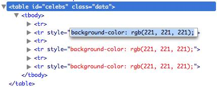

{% include JB/setup %}
{% raw %}
<div>
<div class="calibre3"></div><div class="toc" title="Chapter 2Selecting, Decorating, and Enhancing"><div class="toc"><div class="toc"><div class="toc"><div class="calibre3"></div><h1 class="title"><a xmlns:saxon="http://icl.com/saxon" id="chapter_selecting" class="calibre5"></a><span xmlns:d="http://docbook.org/ns/docbook" class="sitepoint-chapter-titlepage-label">Chapter <span class="sitepoint-chapter-titlepage-number">2</span></span><br xmlns:d="http://docbook.org/ns/docbook" class="calibre11"/><span xmlns:d="http://docbook.org/ns/docbook" class="calibre5">Selecting, Decorating, and Enhancing</span></h1></div></div></div>
  
      

  
      “In phase two, we’re going to want to harness the social and enable
  Web 2.0 community-based, crowd-sourced, Ajax, um, interactions,” says one of
  our new client’s team members. “But for now, we just need some basic stuff
  changed on our site.”

  
      The client is launching a startup called StarTrackr! It uses GPS and
  RFID technology to track popular celebrities’ exact physical location, then
  sells that information to fans. It’s been going great guns operating out of
  a friend’s local store, but now they’re taking the venture online.

  
      “Can you do it? Here’s a list that needs to be live by Friday night,
  close of business.”

  
      You survey the list. As an amazing coincidence, you notice that all
  the requests can be implemented using jQuery. You look at your calendar.
  It’s Friday morning. Let’s get started!

  
      The first task on the list is to add a simple JavaScript alert when
  the existing site loads. This is apparently a temporary measure just to let
  visitors know that StarTrackr! is <span><em class="calibre8">not</em></span> currently being
  sued for invasion of privacy (which was recently implied in a local
  newspaper).

  
      Sure, we could use plain old JavaScript to do it, but we know that
  using jQuery will make our lives a lot easier. Plus, we can learn a new
  technology as we go along. We already saw the anatomy of a jQuery statement
  in <a href="ch01.html" title="Chapter 1Falling in Love with jQuery">Chapter 1</a>; now let’s look at the steps
  required to put jQuery into action: we wait until the page is ready, select
  our target, and then change it.

  
      Adding an alert probably seems a little boring, and you might suspect
  that jQuery can be more complicated than this—and it can ... but only a
  little! Even advanced effects will rely on this basic formula (albeit with
  multiple iterations of the last two steps, and perhaps a bit of JavaScript
  know-how). For now, let’s start nice and easy.

  
      <div class="toc" title="Making Sure the Page Is Ready"><div class="toc"><div class="toc"><div class="toc"><h2 class="title1"><a xmlns:saxon="http://icl.com/saxon" id="d4e767" class="calibre5"></a>Making Sure the Page Is Ready<a id="ch02-001" class="calibre5"></a>
         </h2></div></div></div>
    
         

    
         Before we can interact with HTML elements on a page, those elements
    need to have been loaded: we can only change them once they’re already
    there. In the old days of JavaScript, the only reliable way to do this was
    to wait for the entire page (including images) to finish loading before we
    ran any scripts.

    
         Fortunately for us, jQuery has a very cool built-in event that
    executes our magic as soon as possible. Because of this, our pages and
    applications appear to load much faster to the end user:

    
         <div class="toc"><a xmlns:saxon="http://icl.com/saxon" id="d4e773"></a><div xmlns:l="http://docbook.sourceforge.net/xmlns/l10n/1.0" xmlns:d="http://docbook.org/ns/docbook" class="sitepoint-formal-example-heading"><em class="calibre8" title="chapter_02/01_document_ready/script.js">
		
               <span class="sitepoint-formal-example-filename"><span>chapter_02/01_document_ready/script.js</span></span>
            
	</em></div><div class="toc">
      
            

      
            <pre class="programlisting">
               <span><strong class="calibre9">$(document).ready(function() {</strong></span>
  alert('Welcome to StarTrackr! Now no longer under police 
         investigation!);
<span><strong class="calibre9">});</strong></span>
            </pre>
    
         </div></div>

    
         The important bits here (highlighted in bold) say: “When our
    document is ready, run our function.” This is one of the most common
    snippets of jQuery you’re likely to see. It’s usually a good idea to do a
    simple alert test like this to ensure you’ve properly included the jQuery
    library, and that nothing funny is going on.

    
         <div class="tip" title="Important: You’ll Be Seeing $(document).ready() a Lot!"><h3 class="title2">Important: You’ll Be Seeing <code class="literal">$(document).ready()</code> a
      Lot!</h3>
      
            

      
            Almost everything you do in jQuery will need to be done
      <span><em class="calibre8">after</em></span> the document is ready, so we’ll be using this
      action a lot. It will be referred to as the document-ready event from
      now on. Every example that follows in this book, unless otherwise
      stated, needs to be run from inside the document-ready event. You should
      only need to declare it once per page though.
    
         </div>

    
         The document-ready idiom is actually a little advanced, but it is so
    common that jQuery includes a shortcut version that removes the
    “(document)” and the “ready”:

    
         <pre class="programlisting">$(function() {
  alert('Ready to do your bidding!');
});</pre>

    
         If you’d like to use the shortcut method, go ahead. The expanded
    version is arguably a better example of self-documenting code; it’s much
    easier to see exactly what’s going on, especially if it’s buried in a page
    of another developer’s JavaScript!

    
         At a cursory glance, the document-ready event looks much removed
    from the structure we encountered back in our jQuery anatomy class, but on
    closer inspection we can see that the requisite parts are all accounted
    for: the selector is <code class="email">document</code>; the action is
    <code class="email">ready</code>; and the parameter is a function that runs some
    code (our <code class="email">alert</code>).<a id="d4e792"></a>
         
  
      </div>

  
      <div class="toc" title="Selecting: The Core of jQuery"><div class="toc"><div class="toc"><div class="toc"><h2 class="title1"><a xmlns:saxon="http://icl.com/saxon" id="d4e793" class="calibre5"></a>Selecting: The Core of jQuery<a id="ch02-002" class="calibre5"></a>
         </h2></div></div></div>
    
         

    
         Time is ticking, and deadlines wait for no one. The client team has
    noted that people have been quoting incorrect celebrity IDs from the
    website. This is because the celebrities’ names are all laid out in one
    big table, and it’s difficult for users to line up a celebrity with the
    correct reference ID. A client team member tells us that he wants every
    other row to be a light gray color so that the users can easily find their
    favorite celebrity.

    
         We have jQuery ready to do our bidding; it just needs us to choose a
    target for it. Selecting the elements you want to modify on the page is
    really the art of jQuery. One of the biggest differences between being a
    novice and being a ninja is the amount of time it takes you to grab the
    elements you want to play with!

    
         You might remember from our jQuery anatomy class that all our
    selectors are wrapped in the <code class="email">jQuery</code> function:

    
         <pre class="programlisting">jQuery(&lt;selectors go here&gt;)</pre>

    
         Or the alias:

    
         <pre class="programlisting">
            <a id="ch02-0029"></a>$(&lt;selectors go here&gt;)</pre>

    
         We’ll be using the shortcut alias for the remainder of the book as
    it’s much more convenient. We mentioned earlier that there’s no real
    reason to use the full jQuery name, unless you’re having conflict issues
    with other libraries (see <a href="ch09.html#section_avoiding_conflicts" title="Avoiding Conflicts">the section called “Avoiding Conflicts
            ” in Chapter 9</a>).<a id="d4e810"></a>
         

    
         <div class="toc" title="Simple Selecting"><div class="toc"><div class="toc"><div class="toc"><h3 class="title2"><a xmlns:saxon="http://icl.com/saxon" id="d4e811" class="calibre5"></a>Simple Selecting<a id="ch02-003" class="calibre5"></a>
            </h3></div></div></div>
      
            

      
            Our task is to select alternate table rows on the celebrity table.
      How do we do this? When selecting with jQuery, your goal is to be only
      as specific as required: you want to find out the most concise selector
      that returns exactly what you want to change. Let’s begin by taking a
      look at the markup of the Celebrities table, shown in <a href="ch02.html#fig_new_celebs_table" title="Figure 2.1.  class and id attributes in the HTML page">Figure 2.1</a>.

      
            <div class="toc"><a xmlns:saxon="http://icl.com/saxon" id="fig_new_celebs_table"></a><div class="figure-contents">
        
               

        
               <div class="figure-contents"></div>
      
            </div><p xmlns:l="http://docbook.sourceforge.net/xmlns/l10n/1.0" xmlns:d="http://docbook.org/ns/docbook" class="title4">Figure 2.1. 
                  <code class="email">class</code> and <code class="email">id</code> attributes in the HTML page<a id="ch02-005af"></a>
                  <a id="ch02-004af"></a>
               </p></div>

      
            We could start by selecting every table row element on the entire
      page. To select by element type, you simply pass the element’s HTML name
      as a string parameter to the <code class="email">$</code> function. To select
      all table row elements (which are marked up with the <code class="email">&lt;tr&gt;</code> tag), you would simply write:

      
            <pre class="programlisting">$('tr')</pre>

      
            <div class="tip" title="Important: Nothing Happens!"><h3 class="title2">Important: Nothing Happens!</h3>
        
               

        
               If you run this command, nothing will happen on the page. This
        is expected; after all, we’re just selecting elements. But there’s no
        need to worry; soon enough, we’ll be modifying our selections in all
        sorts of weird and wonderful ways.
      
            </div>

      
            Similarly, if we wanted to select every paragraph, <code class="email">&lt;div&gt;</code> element, <code class="email">&lt;h1&gt;</code> heading, or <code class="email">&lt;input&gt;</code> box on the page, we would use
      these selectors accordingly:

      
            <pre class="programlisting">$('p')
$('div')
$('h1')
$('input')<a id="d4e844"></a>
            </pre>

      
            
               <a id="ch02-004a"></a>
               <a id="ch02-004"></a>But we don’t want to change <span><em class="calibre8">every</em></span>
      table row on the celebrity page, just the rows in the table that have
      the celebrity data. We need to be a bit more specific, and first select
      the containing element that holds the list of celebrities. If you have a
      look at the following HTML and at <a href="ch02.html#fig_new_celebs_table" title="Figure 2.1.  class and id attributes in the HTML page">Figure 2.1</a>, you can see that the <code class="email">table</code> that contains our celebrity data has an
      <code class="email">id</code> of <code class="email">celebs</code> and a <code class="email">class</code> of <code class="email">data</code>. We could use either of these to select
      the <code class="email">table</code>.

      
            <div class="toc"><a xmlns:saxon="http://icl.com/saxon" id="d4e860"></a><div xmlns:l="http://docbook.sourceforge.net/xmlns/l10n/1.0" xmlns:d="http://docbook.org/ns/docbook" class="sitepoint-formal-example-heading"><em class="calibre8" title="chapter_02/02_selecting/index.html (excerpt)">
		
                  <span class="sitepoint-formal-example-filename"><span>chapter_02/02_selecting/index.html</span></span>
        (excerpt)
	</em></div><div class="toc">
        
               

        
               <pre class="programlisting">&lt;table <span><strong class="calibre9">class="data" id="celebs"</strong></span>&gt;
  &lt;thead&gt;
    &lt;tr&gt;
      &lt;th&gt;ID&lt;/th&gt;
      &lt;th&gt;Name&lt;/th&gt;
      &lt;th&gt;Occupation&lt;/th&gt;
      &lt;th&gt;Approx. Location&lt;/th&gt;
      &lt;th&gt;Price&lt;/th&gt;
    &lt;/tr&gt;
  &lt;/thead&gt;</pre>
      
            </div></div>

      
            jQuery borrows the conventions from CSS for referring to <code class="email">id</code> and <code class="email">class</code> names. To select by <code class="email">id</code>, use the hash symbol
      (<code class="email">#</code>) followed by the element’s <code class="email">id</code>, and pass this as a string to the jQuery
      function:

      
            <pre class="programlisting">$('#celebs')</pre>

      
            You should note that the string we pass to the jQuery function is
      exactly the same format as a CSS <code class="email">id</code>
      selector. Because <code class="email">id</code>s should be
      unique, we expect this to only return one element. jQuery now holds a
      reference to this element<a id="d4e875"></a>
               <a id="d4e876"></a>.

      
            
               <a id="ch02-005a"></a>
               <a id="ch02-005c"></a>
               <a id="ch02-005"></a>
               <a id="ch02-005b"></a>Similarly, we can use a CSS <code class="email">class</code> selector to select by <code class="email">class</code>. We pass a string consisting of a
      period (<a id="ch02-006"></a>
               <a id="ch02-006a"></a>
               <code class="email">.</code>), followed by the element’s <code class="email">class</code> name to the jQuery function:

      
            <pre class="programlisting">$('.data')</pre>

      
            Both of these statements will select the table but, as mentioned
      earlier when we talked about the DOM, a <code class="email">class</code> can be shared by multiple elements,
      and jQuery will happily select as many elements as we point it to. If
      there were multiple tables (or any other elements, for that matter) that
      also had the <code class="email">class</code> 
               <code class="email">data</code>, they’d all be selected. For that
      reason, we’ll stick to using the <code class="email">id</code>
      for this one!

      
            <div class="tip" title="Tip: Can You Be More Specific?"><h3 class="title2">Tip: Can You Be More Specific?</h3>
        
               

        
               Just like with CSS, we can select either
        <code class="email">$('.data')</code> or the more specific
        <code class="email">$('table.data')</code>. By specifying an element type in
        addition to the <code class="email">class</code>, the
        selector will only return <code class="email">table</code>
        elements with the <code class="email">class</code> 
                  <code class="email">data</code>, rather than <span><em class="calibre8">all</em></span>
        elements with the class <code class="email">data</code>.
        Additionally, like CSS, you can add parent container selectors to
        narrow your selection even further.<a id="d4e919"></a>
                  <a id="d4e920"></a>
                  <a id="d4e921"></a>
                  <a id="d4e922"></a>
               
      
            </div>
    
         </div>

    
         <div class="toc" title="Narrowing Down Our Selection"><div class="toc"><div class="toc"><div class="toc"><h3 class="title2"><a xmlns:saxon="http://icl.com/saxon" id="d4e923" class="calibre5"></a>Narrowing Down Our Selection<a id="ch02-007" class="calibre5"></a>
            </h3></div></div></div>
      
            

      
            We’ve selected the table successfully, though the table itself is
      of no interest to us; we want <span><em class="calibre8">every other row</em></span>
      inside it. We’ve selected the containing element, and from that
      containing element we want to pick out all the descendants that are
      table rows: that is, we want to specify all table rows
      <span><em class="calibre8">inside</em></span> the containing <code class="email">table</code>. To do this, we put a <a id="ch02-008a"></a>
               <a id="ch02-008b"></a>
               <a id="ch02-008"></a>space between the ancestor and the descendant:

      
            <pre class="programlisting">$('#celebs tr')</pre>

      
            You can use this construct to drill down to the elements that
      you’re looking for, but for clarity’s sake, try to keep your selectors
      as succinct as possible.

      
            Let’s take this idea a step further. Say we wanted to select all
      <code class="email">&lt;span&gt;</code> elements inside <code class="email">&lt;p&gt;</code> elements, which are themselves
      inside <code class="email">&lt;div&gt;</code> elements, but only
      if those <code class="email">&lt;div&gt;</code>s happen to have
      a <code class="email">class</code> of <code class="email">fancy</code>. We would use the selector:

      
            <pre class="programlisting">$('div.fancy p span')</pre>

      
            If you can follow this, you’re ready to select just about
      anything!<a id="d4e950"></a>
            
    
         </div>

    
         <div class="toc" title="Testing Our Selection"><div class="toc"><div class="toc"><div class="toc"><h3 class="title2"><a xmlns:saxon="http://icl.com/saxon" id="d4e951" class="calibre5"></a>Testing Our Selection</h3></div></div></div>
      
            

      
            Right, back to our task at hand. It feels like we’re getting
      closer, but so far we’ve just been selecting blindly with no way of
      knowing if we’re actually selecting any elements. There are some great
      debugging tools at our fingertips these days (we’ll look at them
      shortly), but for now, a simple trick is to interrogate the selection’s
      <a id="ch02-010"></a>
               <code class="email">length</code> property.
      <code class="email">length</code> returns the number of elements currently
      matched by the selector. We can combine this with the good ol’ trusty
      <a id="ch02-009a"></a>
               <a id="ch02-009"></a>
               <code class="email">alert</code> statement to ensure that our
      elements have been selected:

      
            <div class="toc"><a xmlns:saxon="http://icl.com/saxon" id="d4e965"></a><div xmlns:l="http://docbook.sourceforge.net/xmlns/l10n/1.0" xmlns:d="http://docbook.org/ns/docbook" class="sitepoint-formal-example-heading"><em class="calibre8" title="chapter_02/02_selecting/script.js">
		
                  <span class="sitepoint-formal-example-filename"><span>chapter_02/02_selecting/script.js</span></span>
               
	</em></div><div class="toc">
        
               

        
               <pre class="programlisting">$(document).ready(function() {
  alert($('#celebs tr').length + ' elements!');
});</pre>
      
            </div></div>

      
            This will alert the length of the selection<a id="d4e970"></a>
               <a id="d4e971"></a>—seven elements—for
      the celebrity <code class="email">&lt;table&gt;</code>. This
      result might be different from what you’d expect, as there are only six
      celebrities in the table! If you have a look at the HTML, you’ll see
      where our problem lies: the <code class="email">&lt;table&gt;</code> header is also a <code class="email">&lt;tr&gt;</code>, so there are seven rows in total.
      A quick fix involves narrowing down our selector to find only table rows
      that lie inside the <code class="email">&lt;tbody&gt;</code>
      element:

      
            <div class="toc"><a xmlns:saxon="http://icl.com/saxon" id="d4e976"></a><div xmlns:l="http://docbook.sourceforge.net/xmlns/l10n/1.0" xmlns:d="http://docbook.org/ns/docbook" class="sitepoint-formal-example-heading"><em class="calibre8" title="chapter_02/03_narrowing_selection/script.js">
		
                  <span class="sitepoint-formal-example-filename"><span>chapter_02/03_narrowing_selection/script.js</span></span>
               
	</em></div><div class="toc">
        
               

        
               <pre class="programlisting">$(document).ready(function() {
  alert($('#celebs <span><strong class="calibre9">tbody</strong></span> tr').length + ' elements!');
});</pre>
      
            </div></div>

      
            This will alert the correct length of six elements. The jQuery
      object is now holding our six celebrity table row elements.

      
            If the alert shows 0, you’ll know there’s a mistake in your
      selector. A good way to troubleshoot this sort of issue is to reduce
      your selector to the smallest, simplest one possible.

      
            In our example, we could simply write
      <code class="email">$('#celebs')</code>, which would select just the <code class="email">table</code> element and alert a length of 1. From
      here you can make your selectors more specific, and check that you’re
      selecting the correct number of elements as you go.<a id="d4e986"></a>
            
    
         </div>

    
         <div class="toc" title="Filters"><div class="toc"><div class="toc"><div class="toc"><h3 class="title2"><a xmlns:saxon="http://icl.com/saxon" id="d4e987" class="calibre5"></a>Filters<a id="ch02-011" class="calibre5"></a>
               <a id="ch02-011x" class="calibre5"></a>
            </h3></div></div></div>
      
            

      
            With the knowledge that we’ve successfully selected all the table
      rows, narrowing our selection down to every other row is simple, because
      jQuery has a <span><strong class="calibre9">filter</strong></span> to do it. A filter removes
      certain items, and keeps only the ones we want. You’ll acquire a feel
      for what can be filtered as we work through some more examples; for now,
      we’ll just jump straight to the filter we need for our <a id="ch02-011b"></a>zebra stripes:

      
            <div class="toc"><a xmlns:saxon="http://icl.com/saxon" id="d4e1000"></a><div xmlns:l="http://docbook.sourceforge.net/xmlns/l10n/1.0" xmlns:d="http://docbook.org/ns/docbook" class="sitepoint-formal-example-heading"><em class="calibre8" title="chapter_02/04_filters/script.js">
		
                  <span class="sitepoint-formal-example-filename"><span>chapter_02/04_filters/script.js</span></span>
               
	</em></div><div class="toc">
        
               

        
               <pre class="programlisting">$(document).ready(function() {
  alert($('#celebs tbody tr<span><strong class="calibre9">:even</strong></span>').length + ' elements!');
});</pre>
      
            </div></div>

      
            Filters are attached to the item you want to filter (in this case,
      the table rows) and are defined by a <a id="ch02-014a"></a>
               <a id="ch02-014"></a>colon, followed by the filter name. The <a id="ch02-012"></a>
               <a id="ch02-012a"></a>
               <code class="email">:even</code> filter used here keeps every
      even-indexed element in the selection and removes the rest, which is
      what we want. When we alert the selection length now, we see three, as
      expected. All our odd-numbered rows have been filtered out of the
      selection. There is a wide array of jQuery selector filters available to
      us: <a id="ch02-013"></a>
               <a id="ch02-013a"></a>
               <code class="email">:odd</code> (as you might expect), <a id="ch02-015"></a> 
               <a id="ch02-015a"></a>
               <code class="email">:first</code>, <a id="ch02-016"></a>
               <a id="ch02-016a"></a>
               <code class="email">:last</code>, <a id="ch02-017"></a>
               <a id="ch02-017a"></a>
               <code class="email">:eq()</code> (for selecting, for example, the
      third element), and more. We’ll look at each of these in more detail as
      needed throughout the book.<a id="d4e1050"></a>
            
    
         </div>

    
         <div class="toc" title="Using Multiple Selectors"><div class="toc"><div class="toc"><div class="toc"><h3 class="title2"><a xmlns:saxon="http://icl.com/saxon" id="d4e1051" class="calibre5"></a>Using Multiple Selectors<a id="ch02-018" class="calibre5"></a>
            </h3></div></div></div>
      
            

      
            One last trick for basic selecting is the ability to perform
      multiple queries in a single statement. This is very useful, as we’ll
      often want to apply the same action to several elements in unrelated
      parts of the page. Separating the selector strings with commas allows
      you to do this. For example, if we wanted to select every paragraph
      <span><em class="calibre8">and</em></span> every <code class="email">&lt;div&gt;</code> element, <span><em class="calibre8">and</em></span>
      every <code class="email">&lt;h1&gt;</code> heading,
      <span><em class="calibre8">and</em></span> every <code class="email">&lt;input&gt;</code> box on the page, we’d use this
      selector:

      
            <pre class="programlisting">$('p,div,h1,input')</pre>

      
            Learning how to use all these different selectors together to
      access precisely the page elements you want is a big part of mastering
      jQuery. It’s also one of the most satisfying parts, since you can pack
      some fairly complex selection logic into a single, short line of
      code!<a id="d4e1065"></a>
            
    
         </div>

    
         <div class="toc" title="Becoming a Good Selector"><div class="toc"><div class="toc"><div class="toc"><h3 class="title2"><a xmlns:saxon="http://icl.com/saxon" id="d4e1066" class="calibre5"></a>Becoming a Good Selector<a id="ch02-019" class="calibre5"></a>
               <a id="ch02-019x" class="calibre5"></a>
            </h3></div></div></div>
      
            

      
            Selecting may seem quite easy and, up to a point, it is. But what
      we’ve covered so far has only just scratched the surface of selecting.
      In most cases, the basics are all you’ll need: if you’re simply trying
      to target an element or a bunch of related elements, the element name,
      <code class="email">id</code>, and <code class="email">class</code> are the most efficient and easiest
      ways to achieve this.

      
            When moving around the DOM from a given element, the situation
      becomes a little trickier. jQuery provides a myriad of selectors and
      actions
      for traversing the DOM. <span><strong class="calibre9">Traversing</strong></span> means
      traveling up and down the page hierarchy, through parent and child
      elements. You can add and remove elements as you go, applying different
      actions at each step, letting you perform some mind-bogglingly complex
      actions in a single jQuery statement.

      
            If you’re a wiz at CSS, you’ll already be familiar with a lot of
      the statements; they’re mostly borrowed directly from the CSS
      specification. But there are probably a few that you’re unfamiliar with,
      especially if you’re yet to spend much time learning CSS3 selectors. Of
      course, we’ll be covering and learning advanced selection techniques as
      we implement them in our examples and demos. For this reason, anytime
      you want to find out more about all the jQuery selectors available, you
      can just head over to the <a href="http://api.jquery.com/category/selectors/">online documentation and
      browse away.</a><a id="d4e1082"></a><a href="http://api.jquery.com/category/selectors/">
               </a>
            
    
         </div>
  
      </div>

  
      <div class="toc" title="Decorating: CSS with jQuery"><div class="toc"><div class="toc"><div class="toc"><h2 class="title1"><a xmlns:saxon="http://icl.com/saxon" id="d4e1083" class="calibre5"></a>Decorating: CSS with jQuery</h2></div></div></div>
    
         

    
         Selecting elements in jQuery is the hard part. Everything else is
    both easy and fun. After we have selected our targets, we’re able to
    manipulate them to build effects or interfaces. In this section, we will
    cover a series of jQuery actions relating to CSS: adding and removing
    styles, classes, and more. The actions we execute will be applied
    individually to every element we’ve selected, letting us bend the page to
    our will.

    
         <div class="toc" title="Reading CSS Properties"><div class="toc"><div class="toc"><div class="toc"><h3 class="title2"><a xmlns:saxon="http://icl.com/saxon" id="d4e1086" class="calibre5"></a>Reading CSS Properties<a id="ch02-021" class="calibre5"></a>
            </h3></div></div></div>
      
            

      
            Before we try changing CSS properties, let’s look first into how
      we can simply access them. jQuery lets us do this with the <a id="ch02-022"></a>
               <code class="email">css</code> function. Try this:

      
            <div class="toc"><a xmlns:saxon="http://icl.com/saxon" id="d4e1096"></a><div xmlns:l="http://docbook.sourceforge.net/xmlns/l10n/1.0" xmlns:d="http://docbook.org/ns/docbook" class="sitepoint-formal-example-heading"><em class="calibre8" title="chapter_02/05_reading_css_properties/script.js">
		
                  <span class="sitepoint-formal-example-filename"><span>chapter_02/05_reading_css_properties/script.js</span></span>
               
	</em></div><div class="toc">
        
               

        
               <pre class="programlisting">$(document).ready(function() {
  var fontSize = $('#celebs tbody tr:first').<span><strong class="calibre9">css('font-size')</strong></span>;
  alert(fontSize);
});</pre>
      
            </div></div>

      
            This code will alert the font size of the first element matched by
      the selector (as you’ve likely guessed, the <code class="email">:first</code>
      filter will return the first element among those matched by the
      selector).

      
            <div class="tip" title="Tip: CSS Properties of Multiple Elements"><h3 class="title2">Tip: CSS Properties of Multiple Elements</h3>
        
               

        
               
                  <a id="ch02-023"></a>You <span><em class="calibre8">can</em></span> ask for a CSS property
        after selecting multiple elements, but this is almost always a bad
        idea: a function can only return a single result, so you’ll still only
        obtain the property for the first matched element.
      
            </div>

      
            The nifty aspect about retrieving CSS properties with this method
      is that jQuery gives you the element’s <a id="ch02-024b"></a>
               <a id="ch02-024"></a>
               <a id="ch02-024a"></a>
               <span><em class="calibre8">calculated </em></span>style: you’ll receive the
      value that’s been rendered in the user’s browser, rather than the value
      entered in the CSS definition. So, if you gave a <code class="email">&lt;div&gt;</code> a height of, say, 200 pixels in
      the CSS file, but the content inside it pushed the height over 200
      pixels, jQuery would provide you with the actual height of the element,
      rather than the 200 pixels you’d specified.

      
            We’ll see why that’s really important when we come to implement
      some funky tricks a bit later.<a id="d4e1122"></a>
            
    
         </div>

    
         <div class="toc" title="Setting CSS Properties"><div class="toc"><div class="toc"><div class="toc"><h3 class="title2"><a xmlns:saxon="http://icl.com/saxon" id="d4e1123" class="calibre5"></a>Setting CSS Properties<a id="ch02-025" class="calibre5"></a>
            </h3></div></div></div>
      
            

      
            So far we’ve yet to see jQuery actually <span><em class="calibre8">do</em></span>
      anything, and it’s high time to remedy that. We know the page is ready
      (since we popped up an alert), and we’re fairly sure we’ve selected the
      elements we’re interested in. Let’s check that we really have:

      
            <div class="toc"><a xmlns:saxon="http://icl.com/saxon" id="d4e1130"></a><div xmlns:l="http://docbook.sourceforge.net/xmlns/l10n/1.0" xmlns:d="http://docbook.org/ns/docbook" class="sitepoint-formal-example-heading"><em class="calibre8" title="chapter_02/06_zebra_striping/script.js">
		
                  <span class="sitepoint-formal-example-filename"><span>chapter_02/06_zebra_striping/script.js</span></span>
               
	</em></div><div class="toc">
        
               

        
               <pre class="programlisting">$(document).ready(function() {
  $('#celebs tbody tr:even').<span><strong class="calibre9">css('background-color','#dddddd')</strong></span>;
});</pre>
      
            </div></div>

      
            You probably saw that coming! This is the same
      <code class="email">css</code> function we used to read a CSS property, but
      now it’s being passed an extra parameter: the value we wish to set for
      that property. We’ve used the action to set the <a id="ch02-026"></a>
               <code class="email">background-color</code> to the value
      <code class="email">#dddddd</code> (a light gray). Open the file from the code
      archive in your browser and test that it’s working correctly. You can
      see the result in <a href="ch02.html#fig_zebra_striping" title="Figure 2.2. Zebra striping implemented with jQuery">Figure 2.2</a>.

      
            <div class="toc"><a xmlns:saxon="http://icl.com/saxon" id="fig_zebra_striping"></a><div class="figure-contents">
        
               

        
               <div class="figure-contents"></div>
      
            </div><p xmlns:l="http://docbook.sourceforge.net/xmlns/l10n/1.0" xmlns:d="http://docbook.org/ns/docbook" class="title4">Figure 2.2. Zebra striping implemented with jQuery<a id="ch02-026f"></a>
               </p></div>

      
            <div class="tip" title="Important: Were you ready?"><h3 class="title2">Important: Were you ready?</h3>
        
               

        
               <a id="ch02-027"></a>

        
               As mentioned previously, this command must be issued from within
        our <code class="email">$(document).ready</code> function. If we run the
        command before the DOM is ready, the selector will go looking for the
        <code class="email">#celebs</code> element, but will find nothing that
        matches. At this point it will give up; it won’t even look for the
        <code class="email">tr</code> elements, let alone change the
        background style.

        
               This is true for all the examples that follow, so remember to
        wrap your code in the <code class="email">$(document).ready
        </code>function.<a id="d4e1161"></a>
               
      
            </div>

      
            It’s looking good! But perhaps we should add a little extra to
      it—after all, more is more! What about a shade lighter font color to
      really define our stripes? There are a few ways we could add a second
      CSS property. The simplest way is to repeat the entire jQuery statement
      with our new values:

      
            <div class="toc"><a xmlns:saxon="http://icl.com/saxon" id="d4e1163"></a><div xmlns:l="http://docbook.sourceforge.net/xmlns/l10n/1.0" xmlns:d="http://docbook.org/ns/docbook" class="sitepoint-formal-example-heading"><em class="calibre8" title="chapter_02/07_multiple_properties_1/script.js (excerpt)">
		
                  <span class="sitepoint-formal-example-filename"><span>chapter_02/07_multiple_properties_1/script.js</span></span>
        (excerpt)
	</em></div><div class="toc">
        
               

        
               <pre class="programlisting">$('#celebs tbody tr:even').css('background-color','#dddddd');
$('#celebs tbody tr:even').css('color', '#666666');</pre>
      
            </div></div>

      
            These lines are executed one after the other. Though the end
      result is correct, it will become quite messy and inefficient if we have
      to change a whole slew of properties. Thankfully, jQuery provides us
      with a nice way to set multiple properties at the same time, using an
      <a id="ch02-028"></a>
               <a id="ch02-028a"></a>
               <span><strong class="calibre9">object literal</strong></span>. Object literals are
      a JavaScript concept beyond the scope of this book, but for our
      purposes, all you need to know is that they provide an easy way of
      grouping together key/value pairs. For CSS, object literals allow us to
      match up our CSS properties (the keys) with the matching CSS values (the
      values) in a neat package:

      
            <div class="toc"><a xmlns:saxon="http://icl.com/saxon" id="d4e1175"></a><div xmlns:l="http://docbook.sourceforge.net/xmlns/l10n/1.0" xmlns:d="http://docbook.org/ns/docbook" class="sitepoint-formal-example-heading"><em class="calibre8" title="chapter_02/08_multiple_properties_2/script.js (excerpt)">
		
                  <span class="sitepoint-formal-example-filename"><span>chapter_02/08_multiple_properties_2/script.js</span></span>
        (excerpt)
	</em></div><div class="toc">
        
               

        
               <pre class="programlisting">$('#celebs tbody tr:even').css( 
  <span><strong class="calibre9">{'background-color': '#dddddd', 'color': '#666666'}</strong></span>
);</pre>
      
            </div></div>

      
            The object literal is wrapped in <a id="ch02-029"></a>
               <a id="ch02-029a"></a>curly braces, with each key separated from its
      corresponding value by a colon, and each key/value pair separated by a
      comma. It’s passed as a single parameter to the <code class="email">css</code>
      function. Using this method, you can specify as many key/value pairs as
      you like; just separate them with commas. It’s a good idea to lay out
      your key/value pairs in a readable manner, so that you can easily see
      what’s going on when you come back to your code later. This is
      especially helpful if you need to set a larger number of properties. As
      an example:

      
            <div class="toc"><a xmlns:saxon="http://icl.com/saxon" id="d4e1186"></a><div xmlns:l="http://docbook.sourceforge.net/xmlns/l10n/1.0" xmlns:d="http://docbook.org/ns/docbook" class="sitepoint-formal-example-heading"><em class="calibre8" title="chapter_02/09_multiple_properties_3/script.js (excerpt)">
		
                  <span class="sitepoint-formal-example-filename"><span>chapter_02/09_multiple_properties_3/script.js</span></span>
        (excerpt)
	</em></div><div class="toc">
        
               

        
               <pre class="programlisting">$('#celebs tbody tr:even').css({
  'background-color': '#dddddd', 
  'color': '#666666',
  'font-size': '11pt',
  'line-height': '2.5em' 
});</pre>
      
            </div></div>

      
            <div class="tip" title="Note: To Quote or Not to Quote"><h3 class="title2">Note: To Quote or Not to Quote
                  
               </h3>
        
               

        
               In general, when dealing with JavaScript objects, it’s
        unnecessary for the keys to be in quotes. However, for jQuery to work
        properly, any key that contains a <a id="ch02-030a"></a>
                  <a id="ch02-030"></a>hyphen (as our <code class="email">background-color</code> and
        <code class="email">font-size</code> examples do) must be placed in quotes,
        or written in <a id="ch02-031"></a>camel case (like
        <code class="email">backgroundColor</code>).

        
               Additionally, any key that’s already a keyword in the JavaScript
        language (such as <code class="email">float</code> and
        <code class="email">class</code>) must also be written in quotes.

        
               It can be confusing trying to remember which keys need to be
        quoted and which don’t, so the simple solution is to just put all
        object keys in quotes all the time.<a id="d4e1210"></a>
                  <a id="d4e1211"></a>
                  <a id="d4e1212"></a>
                  <a id="d4e1213"></a>
                  <a id="d4e1214"></a>
               
      
            </div>
    
         </div>

    
         <div class="toc" title="Classes"><div class="toc"><div class="toc"><div class="toc"><h3 class="title2"><a xmlns:saxon="http://icl.com/saxon" id="d4e1215" class="calibre5"></a>Classes</h3></div></div></div>
      
            

      
            
               <a id="ch02-033a"></a>
               <a id="ch02-033"></a>Excellent! We’ve already struck two tasks off the client’s
      list, and we have some funky jQuery happening. But if you stop and have
      a look at our last solution, you might notice something a little fishy.
      If you were to inspect the zebra-striped rows in a development tool such
      as Firebug, you’d see that the CSS properties have been added to the
      table rows <span><em class="calibre8">inline</em></span>, as illustrated in <a href="ch02.html#fig_inline_styles_firebug" title="Figure 2.3. Inline styles viewed with Firebug">Figure 2.3</a>.

      
            <div class="toc"><a xmlns:saxon="http://icl.com/saxon" id="fig_inline_styles_firebug"></a><div class="figure-contents">
        
               

        
               <div class="figure-contents"></div>
      
            </div><p xmlns:l="http://docbook.sourceforge.net/xmlns/l10n/1.0" xmlns:d="http://docbook.org/ns/docbook" class="title4">Figure 2.3. Inline styles viewed with Firebug<a id="ch02-033af"></a>
                  <a id="ch02-033f"></a>
               </p></div>

      
            <div class="tip" title="Tip: Firebug &amp; Co."><h3 class="title2">Tip: Firebug &amp; Co.</h3>
        
               

        
               
                  <a id="ch02-034c"></a>
                  <a id="ch02-034b"></a>
                  <a id="ch02-034"></a>
                  <a id="ch02-034a"></a>Firebug (or an equivalent tool such as <a href="https://chrome.google.com/webstore/category/ext/11-web-development">Google
        Chrome’s Developer Tools</a>) lets you examine the DOM in your
        browser, as well as monitor and edit CSS, HTML, and JavaScript
        (including jQuery). It’s like having a Swiss Army knife for the Web,
        and it will save you hours by helping you see exactly what your
        browser thinks is going on. Firebug is available as a <a href="https://addons.mozilla.org/en-US/firefox/addon/firebug/?src=search">Mozilla
        Firefox extension,</a> or as a <a href="http://getfirebug.com/firebuglite">stand-alone JavaScript
        file</a> that you can include in your projects if you develop
        using another browser.
      
            </div>

      
            Inline styles are a big no-no in HTML/CSS best practice, right?
      That’s quite true, and this also applies in jQuery: to keep your code
      clear and maintainable, it makes more sense for all the styling
      information to be in the same place in your CSS files. Then (as we’ll
      soon see), you can simply toggle those styles by attaching or removing
      <code class="email">class</code> attributes to your HTML
      tags.

      
            There are times when it <span><em class="calibre8">is</em></span> a good idea to use
      the <code class="email">css</code> jQuery method in the way we’ve just
      seen. The most common application is when quickly debugging code: if you
      just want to outline an element in red to make sure you’ve selected it
      correctly, switching to your CSS file to add a new rule seems like a
      waste of time.<a id="d4e1255"></a>
               <a id="d4e1256"></a>
            

      
            <div class="toc" title="Adding and Removing Classes"><div class="toc"><div class="toc"><div class="toc"><h4 class="title3"><a xmlns:saxon="http://icl.com/saxon" id="d4e1257"></a>Adding and Removing Classes<a id="ch02-035"></a>
                  <a id="ch02-035a"></a>
               </h4></div></div></div>
        
               

        
               If we need to remove the CSS from inline style rules, where
        should we put it? In a separate stylesheet, of course! We’ll put the
        styles in a CSS <code class="email">class</code>, and use
        jQuery to add and remove that <code class="email">class</code> from targeted elements in the HTML.
        Naturally, jQuery provides some handy methods for manipulating the
        <code class="email">class</code> attributes of DOM elements.
        Let’s use the most common of these, <code class="email">addClass</code>, to
        move our zebra-stripe styles into the CSS file where they
        belong.

        
               The <code class="email">addClass</code> function accepts a string
        containing a <code class="email">class</code> name as a
        parameter. You can also add multiple <code class="email">class</code>es at the same time by separating the
        <code class="email">class</code> names with a space, just as
        you do when writing HTML:

        
               <pre class="programlisting">$('div').addClass('class_name');
$('div').addClass('class_name1 class_name2 class_name3');</pre>

        
               We only want to add one <code class="email">class</code> name, though, which we’ll call
        <code class="email">zebra</code>. First, we’ll add a link to
        the CSS file from within our HTML:<div class="toc"><a xmlns:saxon="http://icl.com/saxon" id="d4e1280"></a><div xmlns:l="http://docbook.sourceforge.net/xmlns/l10n/1.0" xmlns:d="http://docbook.org/ns/docbook" class="sitepoint-formal-example-heading"><em class="calibre8" title="chapter_02/10_adding_classes/index.html (excerpt)">
		
                        <span class="sitepoint-formal-example-filename"><span>chapter_02/10_adding_classes/index.html</span></span>
            (excerpt)
	</em></div><div class="toc">
            
                     

            
                     <pre class="programlisting">&lt;head&gt;
  …
  &lt;title&gt;StarTrackr!&lt;/title&gt;
  <span><strong class="calibre9">&lt;link rel="stylesheet" href="zebra.css" type="text/css" /&gt;</strong></span>
…
&lt;/head&gt;</pre>
          
                  </div></div>And then we’ll add the new rule to a new CSS file:

        
               <div class="toc"><a xmlns:saxon="http://icl.com/saxon" id="d4e1285"></a><div xmlns:l="http://docbook.sourceforge.net/xmlns/l10n/1.0" xmlns:d="http://docbook.org/ns/docbook" class="sitepoint-formal-example-heading"><em class="calibre8" title="chapter_02/10_adding_classes/zebra.css">
		
                     <span class="sitepoint-formal-example-filename"><span>chapter_02/10_adding_classes/zebra.css</span></span>
                  
	</em></div><div class="toc">
          
                  

          
                  <pre class="programlisting">.zebra { 
  background-color: #dddddd;
  color: #666666;
}</pre>
        
               </div></div>

        
               Then, back in our JavaScript file, we’ll modify the selector to
        use jQuery’s <code class="email">addClass</code> method rather than
        <code class="email">css</code>:

        
               <div class="toc"><a xmlns:saxon="http://icl.com/saxon" id="d4e1292"></a><div xmlns:l="http://docbook.sourceforge.net/xmlns/l10n/1.0" xmlns:d="http://docbook.org/ns/docbook" class="sitepoint-formal-example-heading"><em class="calibre8" title="chapter_02/10_adding_classes/script.js (excerpt)">
		
                     <span class="sitepoint-formal-example-filename"><span>chapter_02/10_adding_classes/script.js</span></span>
          (excerpt)
	</em></div><div class="toc">
          
                  

          
                  <pre class="programlisting">$('#celebs tbody tr:even').addClass('zebra');</pre>
        
               </div></div>

        
               The result is exactly the same, but now when we inspect the
        table in Firebug, we’ll see that the inline styles are gone, replaced
        by our new class definition. This is shown in <a href="ch02.html#fig_classes_firebug" title="Figure 2.4. Adding classes to table rows">Figure 2.4</a>.

        
               <div class="toc"><a xmlns:saxon="http://icl.com/saxon" id="fig_classes_firebug"></a><div class="figure-contents">
          
                  

          
                  <div class="figure-contents"></div>
        
               </div><p xmlns:l="http://docbook.sourceforge.net/xmlns/l10n/1.0" xmlns:d="http://docbook.org/ns/docbook" class="title4">Figure 2.4. Adding classes to table rows<a id="ch02-035f"></a>
                     <a id="ch02-035af"></a>
                  </p></div>

        
               That’s much better. Now, if we want to change the appearance of
        the zebra stripes in the future, we can simply modify the CSS file;
        this will save us hunting through our jQuery code (potentially in
        multiple locations) to change the values.<a id="d4e1311"></a>
                  <a id="d4e1312"></a>
               

        
               
                  <a id="ch02-036"></a>
                  <a id="ch02-036a"></a>There will also be times when we want to remove class
        names from elements (we’ll see an example of when this is necessary
        very soon). The action to remove a class is conveniently known as
        <code class="email">removeClass</code>. This function is used in exactly
        the same way as <code class="email">addClass</code>; we just pass the
        (un)desired class name as a parameter:

        
               <pre class="programlisting">$('#celebs tr.zebra').removeClass('zebra');</pre>

        
               Adding and removing classes is a powerful ability, as these
        operations are the building blocks of many visual effects.<a id="d4e1325"></a>
                  <a id="d4e1326"></a>
               
      
            </div>
    
         </div>
  
      </div>

  
      <div class="toc" title="Enhancing: Adding Effects with jQuery"><div class="toc"><div class="toc"><div class="toc"><h2 class="title1"><a xmlns:saxon="http://icl.com/saxon" id="d4e1327" class="calibre5"></a>Enhancing: Adding Effects with jQuery</h2></div></div></div>
    
         

    
         Now you’ve reached an important milestone. You’ve learned the
    component parts of a jQuery statement: the selector, the action, and the
    parameters. And you’ve learned the steps to use the statement: make sure
    the document is ready, select elements, and change them.

    
         In the following section, we’ll apply these lessons to implement
    some cool and useful effects and, with any luck, reinforce your
    understanding of the jQuery basics.

    
         <div class="toc" title="Hiding and Revealing Elements"><div class="toc"><div class="toc"><div class="toc"><h3 class="title2"><a xmlns:saxon="http://icl.com/saxon" id="d4e1331" class="calibre5"></a>Hiding and Revealing Elements</h3></div></div></div>
      
            

      
            
               <a id="ch02-037a"></a>
               <a id="ch02-037"></a>The client team dislike the disclaimer on the site—they
      feel it reflects badly on the product—but the lawyer insists that it’s
      necessary. So the client team have requested that you add a button that
      will remove the text after the user has had a chance to read it:

      
            <div class="toc"><a xmlns:saxon="http://icl.com/saxon" id="d4e1340"></a><div xmlns:l="http://docbook.sourceforge.net/xmlns/l10n/1.0" xmlns:d="http://docbook.org/ns/docbook" class="sitepoint-formal-example-heading"><em class="calibre8" title="chapter_02/11_hiding/index.html (excerpt)">
		
                  <span class="sitepoint-formal-example-filename"><span>chapter_02/11_hiding/index.html</span></span>
        (excerpt)
	</em></div><div class="toc">
        
               

        
               <pre class="programlisting">&lt;input type="button" id="hideButton" value="hide" /&gt;</pre>
      
            </div></div>

      
            We’ve added an HTML button on the page with an <code class="email">id</code> of <code class="email">hideButton</code>. When a user clicks on this
      button, we want the disclaimer element, which has an <code class="email">id</code> of <code class="email">disclaimer</code>, to be hidden:

      
            <div class="toc"><a xmlns:saxon="http://icl.com/saxon" id="d4e1349"></a><div xmlns:l="http://docbook.sourceforge.net/xmlns/l10n/1.0" xmlns:d="http://docbook.org/ns/docbook" class="sitepoint-formal-example-heading"><em class="calibre8" title="chapter_02/11_hiding/script.js (excerpt)">
		
                  <span class="sitepoint-formal-example-filename"><span>chapter_02/11_hiding/script.js</span></span>
        (excerpt)
	</em></div><div class="toc">
        
               

        
               <pre class="programlisting">$('#hideButton').click(function() {
  $('#disclaimer').hide();
});</pre>
      
            </div></div>

      
            Run this code and make sure the disclaimer element disappears when
      you click the hide button.

      
            The part in this example that makes the element actually disappear
      is the <code class="email">hide</code> action. So, you might ask, what’s all
      the other code that surrounds that line? It’s what’s called an event
      handler, an understanding of which is crucial to becoming a jQuery
      ninja. There are many event handlers we can use (we’ve used the
      <code class="email">click</code> event handler here) and we’ll be using a lot of
      them as we move on.<a id="d4e1357"></a>
               <a id="d4e1358"></a>
            

      
            <div class="toc" title="Event Handlers"><div class="toc"><div class="toc"><div class="toc"><h4 class="title3"><a xmlns:saxon="http://icl.com/saxon" id="d4e1359"></a>Event Handlers<a id="ch02-038"></a>
               </h4></div></div></div>
        
               

        
               
                  <span><strong class="calibre9">Event handlers</strong></span> are named thus as they
        handle events. Events are actions (taken by either the user or the
        browser itself) that occur on the web page. When an event happens, we
        say that it has <span><em class="calibre8">fired</em></span>. And when we write some
        code to handle the event (which will be wrapped inside a regular
        JavaScript function), we say we <span><em class="calibre8">caught</em></span> the
        event.

        
               There are thousands of events fired on a web page all the time:
        when a user moves the mouse or clicks a button, or when a browser
        window is resized, or the scrollbar is moved. We can catch, and act
        on, any of these events.

        
               The first event that you were introduced to in this book was the
        document-ready event. Yes, that was an event handler: when the
        document said, “I’m ready,” it fired an event, which our jQuery
        statement caught.

        
               We used the <a id="ch02-039"></a>
                  <code class="email">click</code> event handler to tell
        jQuery to hide the disclaimer when the button is clicked:

        
               <pre class="programlisting">$('#hideButton').<span><strong class="calibre9">click</strong></span>(function() {
  $('#disclaimer').hide();
});<a id="d4e1377"></a>
               </pre>
      
            </div>

      
            <div class="toc" title="this"><div class="toc"><div class="toc"><div class="toc"><h4 class="title3"><a xmlns:saxon="http://icl.com/saxon" id="d4e1378"></a>
                  <code class="email">this</code>
                  <a id="ch02-040b"></a>
                  <a id="ch02-040"></a>
                  <a id="ch02-040a"></a>
               </h4></div></div></div>
        
               

        
               When an event fires, we’ll often want to refer to the element
        that fired it. For example, we might want to modify the button that
        the user has just clicked on in some way. Such a reference is
        available inside our event handler code via the JavaScript keyword
        <code class="email">this</code>. To convert the <a id="ch02-0409"></a>
                  <a id="ch02-0409a"></a>JavaScript object to a jQuery object, we wrap it in the
        jQuery selector:

        
               <div class="toc"><a xmlns:saxon="http://icl.com/saxon" id="d4e1399"></a><div xmlns:l="http://docbook.sourceforge.net/xmlns/l10n/1.0" xmlns:d="http://docbook.org/ns/docbook" class="sitepoint-formal-example-heading"><em class="calibre8" title="chapter_02/12_this/script.js (excerpt)">
		
                     <span class="sitepoint-formal-example-filename"><span>chapter_02/12_this/script.js</span></span>
          (excerpt)
	</em></div><div class="toc">
          
                  

          
                  <pre class="programlisting">$('#hideButton').click(function() {
  <span><strong class="calibre9">$(this)</strong></span>.hide(); // a curious disappearing button.
});</pre>
        
               </div></div>

        
               
                  <code class="email">$(this)</code> provides a nicer way to talk about
        the element that fired the event, rather than having to re-select
        it.

        
               <div class="tip" title="Tip: Where’s the action?"><h3 class="title2">Tip: Where’s the action?</h3>
          
                  

          
                  This might be a bit confusing when you’re starting out, as the
          “action” component of a jQuery statement seems to have several
          purposes: we’ve seen it used to run animations, retrieve values, and
          now, handle events! It’s true—it gets around! Usually the action’s
          name gives you a good clue to its purpose, but if you become lost,
          it’s best to consult the index. After a while, you’ll sort out the
          handlers from the animations from the utilities.<a id="d4e1409"></a>
                     <a id="d4e1410"></a>
                     <a id="d4e1411"></a>
                  
        
               </div>
      
            </div>

      
            <div class="toc" title="Revealing Hidden Elements"><div class="toc"><div class="toc"><div class="toc"><h4 class="title3"><a xmlns:saxon="http://icl.com/saxon" id="d4e1412"></a>Revealing Hidden Elements<a id="ch02-041a"></a>
                  <a id="ch02-041"></a>
               </h4></div></div></div>
        
               

        
               On with our task! The client team have also specified that the
        user needs to be able to retrieve the disclaimer in case they close it
        by mistake. So let’s add another button to the HTML, this time with an
        <code class="email">id</code> of <code class="email">showButton</code>:

        
               <div class="toc"><a xmlns:saxon="http://icl.com/saxon" id="d4e1423"></a><div xmlns:l="http://docbook.sourceforge.net/xmlns/l10n/1.0" xmlns:d="http://docbook.org/ns/docbook" class="sitepoint-formal-example-heading"><em class="calibre8" title="chapter_02/13_revealing/index.html (excerpt)">
		
                     <span class="sitepoint-formal-example-filename"><span>chapter_02/13_revealing/index.html</span></span>
          (excerpt)
	</em></div><div class="toc">
          
                  

          
                  <pre class="programlisting">&lt;input type="button" id="showButton" value="show" /&gt;</pre>
        
               </div></div>

        
               We’ll also add another jQuery statement to our script file, to
        handle showing the disclaimer when the <span xmlns:l="http://docbook.sourceforge.net/xmlns/l10n/1.0" xmlns:d="http://docbook.org/ns/docbook">show</span>
        button is clicked:

        
               <div class="toc"><a xmlns:saxon="http://icl.com/saxon" id="d4e1429"></a><div xmlns:l="http://docbook.sourceforge.net/xmlns/l10n/1.0" xmlns:d="http://docbook.org/ns/docbook" class="sitepoint-formal-example-heading"><em class="calibre8" title="chapter_02/13_revealing/script.js (excerpt)">
		
                     <span class="sitepoint-formal-example-filename"><span>chapter_02/13_revealing/script.js</span></span>
          (excerpt)
	</em></div><div class="toc">
          
                  

          
                  <pre class="programlisting">$('#showButton').click(function() {
  $('#disclaimer').show();
});</pre>

          
                  <a id="d4e1433"></a>

          
                  <a id="d4e1434"></a>
        
               </div></div>
      
            </div>

      
            <div class="toc" title="Toggling Elements"><div class="toc"><div class="toc"><div class="toc"><h4 class="title3"><a xmlns:saxon="http://icl.com/saxon" id="d4e1435"></a>Toggling Elements<a id="ch02-042a"></a>
                  <a id="ch02-042b"></a>
               </h4></div></div></div>
        
               

        
               Having separate buttons for hiding and showing the disclaimer
        seems like a waste of valuable screen real estate. It would be better
        to have one button that performed both tasks: hiding the disclaimer
        when it’s visible, and showing it when it’s hidden. One way we could
        do this is by checking if the element is visible or not, and then
        showing or hiding accordingly. We’ll remove the old buttons and add
        this nice new one:

        
               <div class="toc"><a xmlns:saxon="http://icl.com/saxon" id="d4e1444"></a><div xmlns:l="http://docbook.sourceforge.net/xmlns/l10n/1.0" xmlns:d="http://docbook.org/ns/docbook" class="sitepoint-formal-example-heading"><em class="calibre8" title="chapter_02/14_toggle_1/index.html (excerpt)">
		
                     <span class="sitepoint-formal-example-filename"><span>chapter_02/14_toggle_1/index.html</span></span>
          (excerpt)
	</em></div><div class="toc">
          
                  

          
                  <pre class="programlisting">&lt;input type="button" id="toggleButton" value="toggle" /&gt;</pre>
        
               </div></div>

        
               When it’s clicked, we check to find out if we should show or
        hide the disclaimer:

        
               <div class="toc"><a xmlns:saxon="http://icl.com/saxon" id="d4e1449"></a><div xmlns:l="http://docbook.sourceforge.net/xmlns/l10n/1.0" xmlns:d="http://docbook.org/ns/docbook" class="sitepoint-formal-example-heading"><em class="calibre8" title="chapter_02/14_toggle_1/script.js (excerpt)">
		
                     <span class="sitepoint-formal-example-filename"><span>chapter_02/14_toggle_1/script.js</span></span>
          (excerpt)
	</em></div><div class="toc">
          
                  

          
                  <pre class="programlisting">$('#toggleButton').click(function() {
  if ($('#disclaimer').is(':visible')) {
    $('#disclaimer').hide();
  } else {
    $('#disclaimer').show();
  }
});</pre>
        
               </div></div>

        
               This introduces the <a id="ch02-043a"></a>
                  <a id="ch02-043"></a>
                  <code class="email">is</code> action.
        <code class="email">is</code> takes any of the same selectors we
        normally pass to the jQuery function, and checks to see if they match
        the elements it was called on. In this case, we’re checking to see if
        our selected <code class="email">#disclaimer</code> is also selected by the
        pseudo-selector <a id="ch02-044"></a>
                  <a id="ch02-044a"></a>
                  <code class="email">:visible</code>. It can also be used to
        check for other attributes; for example, if a selection is a <code class="email">form</code> or a <code class="email">div</code>, or if the selection is enabled, and so
        on.

        
               <div class="tip" title="Important: The if Statement"><h3 class="title2">Important: The 
                     <code class="literal">if</code> Statement</h3>
          
                  

          
                  If you’re entirely new to programming (that is, if you’ve only
          ever worked with HTML and CSS), that whole block of code is probably
          quite confusing. Don’t worry, it’s actually straightforward:

          
                  <pre class="programlisting">if (condition) {
  // this part happens if the condition is true
} else {
  // this part happens if the condition is false
}</pre>

          
                  The condition can be anything that JavaScript will evaluate to
          <code class="email">true</code> or <code class="email">false</code>. This sort of
          structure is extremely common in any type of programming, and we’ll
          be using it a lot for the rest of the book. If you’re uncomfortable
          with it, the best way to learn is to play around: try writing
          different <code class="email">if/else</code> blocks using jQuery’s
          <code class="email">is</code> action like the one we wrote above.
          You’ll get the hang of it in no time!<a id="d4e1487"></a>
                  
        
               </div>

        
               
                  <code class="email">is</code> will return <code class="email">true</code>
        or <code class="email">false</code> depending on whether the elements match
        the selector. For our purposes, we’ll show the element if it’s hidden,
        and hide it if it’s visible. This type of logic—where we flip between
        two states—is called a <span><strong class="calibre9">toggle</strong></span>, and is a very
        useful construct.<a id="d4e1493"></a>
                  <a id="d4e1494"></a>
               

        
               
                  <a id="ch02-042"></a>Toggling elements between two states is so common that
        many jQuery functions have a version that allows for toggling. The
        toggle version of
        <code class="email">show</code>/<code class="email">hide</code> is simply
        called <code class="email">toggle</code>, and works like this:

        
               <div class="toc"><a xmlns:saxon="http://icl.com/saxon" id="d4e1502"></a><div xmlns:l="http://docbook.sourceforge.net/xmlns/l10n/1.0" xmlns:d="http://docbook.org/ns/docbook" class="sitepoint-formal-example-heading"><em class="calibre8" title="chapter_02/15_toggle_2/script.js (excerpt)">
		
                     <span class="sitepoint-formal-example-filename"><span>chapter_02/15_toggle_2/script.js</span></span>
          (excerpt)
	</em></div><div class="toc">
          
                  

          
                  <pre class="programlisting">$('#toggleButton').click(function() {
  $('#disclaimer').toggle();
});</pre>
        
               </div></div>

        
               Every time you click the button, the element toggles between
        visible and hidden.

        
               <div class="tip" title="Note: Clean Up Your Old Code"><h3 class="title2">Note: Clean Up Your Old Code</h3>
          
                  

          
                  We’ve now just added another event handler to the toggle
          button, so you need to be sure to remove the previous event handler
          code (containing the <code class="email">if/else</code> statement);
          otherwise, both will run!
        
               </div>

        
               It would be nice, however, if the button was labeled with a more
        useful word than “toggle,” which might be confusing to our users. What
        if you want to toggle the <a id="ch02-046a"></a>
                  <a id="ch02-046"></a>text of the button as well? As is often the case when
        working with jQuery, there are a few ways we could approach this
        problem. Here’s one:

        
               <div class="toc"><a xmlns:saxon="http://icl.com/saxon" id="d4e1518"></a><div xmlns:l="http://docbook.sourceforge.net/xmlns/l10n/1.0" xmlns:d="http://docbook.org/ns/docbook" class="sitepoint-formal-example-heading"><em class="calibre8" title="chapter_02/16_toggle_text/script.js (excerpt)">
		
                     <span class="sitepoint-formal-example-filename"><span>chapter_02/16_toggle_text/script.js</span></span>
          (excerpt)
	</em></div><div class="toc">
          
                  

          
                  <pre class="programlisting">$('#toggleButton').click(function() {
  $('#disclaimer').toggle();

  if ($('#disclaimer').is(':visible')) {
    $(this).val('Hide');
  } else {
    $(this).val('Show');
  }
});</pre>
        
               </div></div>

        
               There’s a lot in this code that will be new to you. We’ll save
        most of the details for later, but have a look at it and see if you
        can figure it out yourself. (Hint: remember that the selector
        <code class="email">$(this)</code> refers to the element that caused the event
        to fire; in this case, the button.)<a id="d4e1524"></a>
                  <a id="d4e1525"></a>
                  <a id="d4e1526"></a>
               
      
            </div>
    
         </div>

    
         <div class="toc" title="Progressive Enhancement"><div class="toc"><div class="toc"><div class="toc"><h3 class="title2"><a xmlns:saxon="http://icl.com/saxon" id="d4e1527" class="calibre5"></a>Progressive Enhancement<a id="ch02-047a" class="calibre5"></a>
               <a id="ch02-047" class="calibre5"></a>
            </h3></div></div></div>
      
            

      
            Our disclaimer functionality is working perfectly, and our client
      will doubtlessly be impressed with it. However, there’s one subtle
      aspect of our solution that we should be aware of: if a user came to our
      site using a browser without support for JavaScript, they’d see a button
      on the page that would do nothing when they clicked it. This would lead
      to a very confused user, who might even abandon our site.

      
            “No support for JavaScript?” you might snort. “What kind of
      browser is unable to run JavaScript?!”

      
            There might be more people than you think browsing the Web without
      JavaScript: users on very old computers or limited devices (like some
      mobile phones); people surfing from inside locked-down intranets; and
      those who worry that JavaScript is an unnecessary security risk and
      choose to disable it.

      
            Depending on your site’s demographic, <a href="http://developer.yahoo.com/blogs/ydn/posts/2010/10/how-many-users-have-javascript-disabled/">up
      to 3% of your users might be browsing without JavaScript
      capabilities,</a> and if you have a million customers, that’s 30,000
      alienated customers! The solution is to provide an acceptable experience
      to these users, and beef it up for everyone else. This practice is known
      as <span><strong class="calibre9">progressive enhancement</strong></span>.

      
            For our disclaimer functionality, we might settle on this
      compromise: we want the disclaimer to be visible to all users, so we
      place it in our HTML. Then, we add the ability to hide it for users with
      JavaScript. That said, we’d prefer to avoid displaying the show/hide
      button to users who’ll be unable to make use of it.

      
            One way of accomplishing this might be to hide our button with
      CSS, and only show it via a jQuery <code class="email">css</code>
      statement. Another way is to add the button to the page via jQuery; that
      way, only users with JavaScript will see the button at all.
      Perfect!<a id="d4e1544"></a>
               <a id="d4e1545"></a>
            
    
         </div>

    
         <div class="toc" title="Adding New Elements"><div class="toc"><div class="toc"><div class="toc"><h3 class="title2"><a xmlns:saxon="http://icl.com/saxon" id="d4e1546" class="calibre5"></a>Adding New Elements<a id="ch02-049" class="calibre5"></a>
            </h3></div></div></div>
      
            

      
            So far we’ve seen the jQuery function used for selecting, but it
      does have another function of equal importance: creating new elements.
      In fact, any valid HTML string you put inside the jQuery function will
      be created and made ready for you to stick on the page. Here’s how we
      might create a simple paragraph element:

      
            <pre class="programlisting">$('&lt;p&gt;A new paragraph!&lt;/p&gt;')</pre>

      
            jQuery performs several useful actions when you write this code:
      it parses the HTML into a DOM fragment and selects it, just as an
      ordinary jQuery selector does. That means it’s instantly ready for
      further jQuery processing. For example, to add a <code class="email">class</code> to our newly created element, we can
      simply write:

      
            <pre class="programlisting">$('&lt;p&gt;A new paragraph!&lt;/p&gt;').addClass('new');</pre>

      
            The new paragraph will now be given the <code class="email">class</code> 
               <code class="email">new</code>. Using this method, you can create any
      new elements you need via jQuery itself, rather than defining them in
      your HTML markup. This way, we can complete our goal of progressively
      enhancing our page.

      
            <div class="tip" title="Tip: innerHTML"><h3 class="title2">Tip: 
                  <code class="literal">innerHTML</code>
                  
               </h3>
        
               

        
               Internally, the HTML string is parsed by creating a simple
        element (such as a <code class="email">&lt;div&gt;</code>) and
        setting the <code class="email">innerHTML</code> property of that <code class="email">&lt;div&gt;</code> to the markup you provide. Some
        content you pass in is unable to convert quite as easily, so it’s best
        to keep the HTML fragments as simple as possible.
      
            </div>

      
            Once we’ve created our new elements, we need a way to insert where
      we’d like them to go in the page. There are several jQuery functions
      available for this purpose. The first we’ll look at is the <a id="ch02-051"></a>
               <code class="email">insertAfter</code> function.
      <code class="email">insertAfter</code> will take our current jQuery
      selection (in this case, our newly created elements) and insert it after
      another selected element, which we pass as a parameter to the
      function.

      
            An example is the easiest way to show how this works. This is how
      we’d create the toggle button using jQuery:

      
            <div class="toc"><a xmlns:saxon="http://icl.com/saxon" id="d4e1576"></a><div xmlns:l="http://docbook.sourceforge.net/xmlns/l10n/1.0" xmlns:d="http://docbook.org/ns/docbook" class="sitepoint-formal-example-heading"><em class="calibre8" title="chapter_02/17_insert_after/script.js (excerpt)">
		
                  <span class="sitepoint-formal-example-filename"><span>chapter_02/17_insert_after/script.js</span></span>
        (excerpt)
	</em></div><div class="toc">
        
               

        
               <pre class="programlisting">
                  <span><strong class="calibre9">$('&lt;input type="button" value="toggle" id="toggleButton"&gt;')
  .insertAfter('#disclaimer');</strong></span>
$('#toggleButton').click(function() {
  $('#disclaimer').toggle();
});</pre>
      
            </div></div>

      
            As shown in <a href="ch02.html#fig_toggle_button" title="Figure 2.5. A button created and inserted with jQuery">Figure 2.5</a>, the button is
      inserted into our page after the disclaimer, just as if we’d put it
      there in our HTML file.

      
            <div class="toc"><a xmlns:saxon="http://icl.com/saxon" id="fig_toggle_button"></a><div class="figure-contents">
        
               

        
               <div class="figure-contents"></div>
      
            </div><p xmlns:l="http://docbook.sourceforge.net/xmlns/l10n/1.0" xmlns:d="http://docbook.org/ns/docbook" class="title4">Figure 2.5. A button created and inserted with jQuery<a id="ch02-049f"></a>
                  <a id="ch02-051f"></a>
               </p></div>

      
            The <code class="email">insertAfter</code> function adds the new element
      as a sibling directly after the disclaimer element. <a id="d4e1596"></a>
               <a id="ch02-052"></a>If you want the button to appear
      <span><em class="calibre8">before</em></span> the disclaimer element, you could either
      target the element before the disclaimer and use
      <code class="email">insertAfter</code>, or, more logically, use the
      <code class="email">insertBefore</code> method.
      <code class="email">insertBefore</code> will also place the new element as
      a sibling to the existing element, but it will appear immediately before
      it:

      
            <div class="toc"><a xmlns:saxon="http://icl.com/saxon" id="d4e1604"></a><div xmlns:l="http://docbook.sourceforge.net/xmlns/l10n/1.0" xmlns:d="http://docbook.org/ns/docbook" class="sitepoint-formal-example-heading"><em class="calibre8" title="chapter_02/18_insert_before/script.js (excerpt)">
		
                  <span class="sitepoint-formal-example-filename"><span>chapter_02/18_insert_before/script.js</span></span>
        (excerpt)
	</em></div><div class="toc">
        
               

        
               <pre class="programlisting">$('&lt;input type="button" value="toggle" id="toggleButton"&gt;')
  .<span><strong class="calibre9">insertBefore</strong></span>('#disclaimer');</pre>
      
            </div></div>

      
            <a id="d4e1609"></a>

      
            A quick refresher: when we talk about the DOM, <a id="ch02-053"></a>
               <span><em class="calibre8">siblings</em></span> refer to elements on the
      same level in the DOM hierarchy. If you have a <code class="email">&lt;div&gt;</code> that contains two <code class="email">&lt;span&gt;</code> elements, the <code class="email">&lt;span&gt;</code> elements are siblings.

      
            If you want to add your new element as a
      <span><em class="calibre8">child</em></span> of an existing element (that is, if you want
      the new element to appear <span><em class="calibre8">inside</em></span> the existing
      element), you can use the <a id="ch02-054"></a>
               <code class="email">prependTo</code>
      or <a id="ch02-055"></a>
               <code class="email">appendTo</code>
      functions:

      
            <div class="toc"><a xmlns:saxon="http://icl.com/saxon" id="d4e1629"></a><div xmlns:l="http://docbook.sourceforge.net/xmlns/l10n/1.0" xmlns:d="http://docbook.org/ns/docbook" class="sitepoint-formal-example-heading"><em class="calibre8" title="chapter_02/19_prepend_append/script.js (excerpt)">
		
                  <span class="sitepoint-formal-example-filename"><span>chapter_02/19_prepend_append/script.js</span></span>
        (excerpt)
	</em></div><div class="toc">
        
               

        
               <pre class="programlisting">$('&lt;strong&gt;START!&lt;/strong&gt;').prependTo('#disclaimer');
$('&lt;strong&gt;END!&lt;/strong&gt;').appendTo('#disclaimer');</pre>
      
            </div></div>

      
            As you can see in <a href="ch02.html#fig_prepend_append" title="Figure 2.6.  prependTo and appendTo in action">Figure 2.6</a>, our new
      elements have been added to the start and the end of the actual
      disclaimer <code class="email">&lt;p&gt;</code>, rather than
      before or after it. There are more actions for inserting and removing
      elements, but as they’re not required in this round of changes, we’ll
      address them later on.<a id="d4e1636"></a>
               <a id="d4e1637"></a>
            

      
            <div class="toc"><a xmlns:saxon="http://icl.com/saxon" id="fig_prepend_append"></a><div class="figure-contents">
        
               

        
               <div class="figure-contents"></div>
      
            </div><p xmlns:l="http://docbook.sourceforge.net/xmlns/l10n/1.0" xmlns:d="http://docbook.org/ns/docbook" class="title4">Figure 2.6. 
                  <code class="email">prependTo</code> and
        <code class="email">appendTo</code> in action<a id="ch02-055f"></a>
                  <a id="ch02-054f"></a>
               </p></div>

      
            <div class="tip" title="Important: Inserting Multiple Elements"><h3 class="title2">Important: Inserting Multiple Elements</h3>
        
               

        
               A new item is inserted <span><em class="calibre8">once for each element that’s
        matched with the selector</em></span>. If your selector matches every
        paragraph tag, for example, the <code class="email">insertAfter</code>
        action will add a new element after <span><em class="calibre8">every</em></span>
        paragraph tag. Which makes it a fairly powerful function!<a id="d4e1657"></a>
               
      
            </div>

      
            <div class="tip" title="Tip: Avoiding Repetition"><h3 class="title2">Tip: Avoiding Repetition
               </h3>
        
               

        
               If you’re flying along so far, here’s a bonus advanced tip for
        creating elements. Once you’ve inserted a few bits of HTML here and
        there, you’ll become annoyed at the repetitive process of creating
        elements, selecting them, and adding event handlers to them. One way
        around this is to add information directly to the new elements as you
        create them using advanced creation syntax:

        
               <pre class="programlisting">$('&lt;div&gt;', {
    id: 'specialButton',
    text: 'Click Me!',
    click: function(){
        alert("Advanced jQuery!")
    }
}).insertBefore('#disclaimer');</pre>

        
               To use the advanced syntax, you create the element as usual (in
        this case, a simple <code class="email">&lt;div&gt;</code>), but you add the
        element properties as a <a id="ch02-057"></a>key/value pair object like we did with the CSS styles at
        the beginning of the chapter. The properties include normal attributes
        that belong on HTML elements, but you can also add your event handlers
        directly on creation.<a id="d4e1670"></a>
               
      
            </div>
    
         </div>

    
         <div class="toc" title="Removing Existing Elements"><div class="toc"><div class="toc"><div class="toc"><h3 class="title2"><a xmlns:saxon="http://icl.com/saxon" id="d4e1671" class="calibre5"></a>Removing Existing Elements<a id="ch02-058a" class="calibre5"></a>
            </h3></div></div></div>
      
            

      
            We informed the client team that up to 3% of users might be
      without JavaScript capabilities, therefore missing out on some of the
      advanced features we’re building. Members of the client team asked if we
      could add a message explaining that JavaScript was recommended for such
      users. Obviously the message should be hidden from those who
      <span><em class="calibre8">do</em></span> have JavaScript.

      
            The correct solution is to put the message inside the <a id="ch02-059"></a>
               <code class="email">&lt;noscript&gt;</code> tag
      that was provided for this purpose. On the other hand, breaking the
      rules is fine by us in the interests of self-education, and this looks
      like the perfect opportunity to learn how to remove HTML elements from a
      page using jQuery. We’ll put the message in our HTML and remove it with
      jQuery; that way, only those visitors without JavaScript will see
      it.

      
            Let’s go ahead and add the new warning to our HTML page:

      
            <div class="toc"><a xmlns:saxon="http://icl.com/saxon" id="d4e1684"></a><div xmlns:l="http://docbook.sourceforge.net/xmlns/l10n/1.0" xmlns:d="http://docbook.org/ns/docbook" class="sitepoint-formal-example-heading"><em class="calibre8" title="chapter_02/20_removing_elements/index.html (excerpt)">
		
                  <span class="sitepoint-formal-example-filename"><span>chapter_02/20_removing_elements/index.html</span></span>
        (excerpt)
	</em></div><div class="toc">
        
               

        
               <pre class="programlisting">&lt;p id="no-script"&gt;
  We recommend that you have JavaScript enabled!
&lt;/p&gt; </pre>
      
            </div></div>

      
            Now we need to run our code to remove the element from the page.
      If a user has JavaScript disabled, our jQuery statements will fail to
      run and the message will remain on the screen. To remove elements in
      jQuery, you first select them (as usual) with a selector, and then call
      the <a id="ch02-058"></a>
               <code class="email">remove</code> method:

      
            <div class="toc"><a xmlns:saxon="http://icl.com/saxon" id="d4e1694"></a><div xmlns:l="http://docbook.sourceforge.net/xmlns/l10n/1.0" xmlns:d="http://docbook.org/ns/docbook" class="sitepoint-formal-example-heading"><em class="calibre8" title="chapter_02/20_removing_elements/script.js (excerpt)">
		
                  <span class="sitepoint-formal-example-filename"><span>chapter_02/20_removing_elements/script.js</span></span>
        (excerpt)
	</em></div><div class="toc">
        
               

        
               <pre class="programlisting">$('#no-script').remove();</pre>
      
            </div></div>

      
            The <code class="email">remove</code> action will remove all the
      selected elements from the DOM, and will also remove any event handlers
      or data attached to those elements. The <code class="email">remove</code>
      action does not require any parameters, though you can also specify an
      expression to refine the selection further. Try this example:

      
            <div class="toc"><a xmlns:saxon="http://icl.com/saxon" id="d4e1701"></a><div xmlns:l="http://docbook.sourceforge.net/xmlns/l10n/1.0" xmlns:d="http://docbook.org/ns/docbook" class="sitepoint-formal-example-heading"><em class="calibre8" title="chapter_02/21_removing_with_selector/script.js (excerpt)">
		
                  <span class="sitepoint-formal-example-filename"><span>chapter_02/21_removing_with_selector/script.js</span></span>
        (excerpt)
	</em></div><div class="toc">
        
               

        
               <pre class="programlisting">$('#celebs tr').remove('<a id="ch02-060b"></a>
                  <a id="ch02-060"></a>
                  <a id="ch02-060a"></a>:contains("Singer")');</pre>
      
            </div></div>

      
            Rather than removing every <code class="email">tr</code>
      in the <code class="email">#celebs</code> 
               <code class="email">&lt;div&gt;</code>, this code will remove only those
      rows which contain the text “Singer.” This will come in handy when we
      look at some advanced effects in the next chapter.

      
            Thanks to these changes, our page will work nicely for the
      potential 3% of our users without JavaScript, and even better for the
      remaining 97%. This is a very simple example of progressive enhancement,
      but it gives you a good understanding of the fundamental idea: rather
      than using jQuery as the underpinnings of your UI, use it to add some
      sugar to an already functioning experience. That way, you know no one’s
      left behind.

      
            In the interests of keeping our sample code small and focused,
      we’ll skip delving much further into the topic. But go off and research
      it for yourself: it’s the kind of best practice that makes you a better
      web developer.<a id="d4e1721"></a>
               <a id="d4e1722"></a>
            
    
         </div>

    
         <div class="toc" title="Modifying Content"><div class="toc"><div class="toc"><div class="toc"><h3 class="title2"><a xmlns:saxon="http://icl.com/saxon" id="d4e1723" class="calibre5"></a>Modifying Content<a id="ch02-061" class="calibre5"></a>
               <a id="ch02-061a" class="calibre5"></a>
            </h3></div></div></div>
      
            

      
            We can do just about anything we want to our elements now: show
      them, hide them, add new ones, remove old ones, style them however we
      like … but what if we want to change the actual content of an element?
      Again, jQuery provides a couple of methods for just this purpose:
      <a id="ch02-062"></a>
               <code class="email">text</code> and <a id="ch02-062a"></a>
               <code class="email">html</code>.

      
            The <code class="email">text</code> and
      <code class="email">html</code> actions are similar, as both set the
      content for the elements we’ve selected. We simply pass a string to
      either function:

      
            <div class="toc"><a xmlns:saxon="http://icl.com/saxon" id="d4e1743"></a><div xmlns:l="http://docbook.sourceforge.net/xmlns/l10n/1.0" xmlns:d="http://docbook.org/ns/docbook" class="sitepoint-formal-example-heading"><em class="calibre8" title="chapter_02/22_modifying_content/script.js (excerpt)">
		
                  <span class="sitepoint-formal-example-filename"><span>chapter_02/22_modifying_content/script.js</span></span>
        (excerpt)
	</em></div><div class="toc">
        
               

        
               <pre class="programlisting">$('p').html('good bye, cruel paragraphs!');
$('h2').text('All your titles are belong to us');</pre>
      
            </div></div>

      
            In both these examples the matched elements’ contents will change
      to the string we’ve provided: every paragraph and <code class="email">&lt;h2&gt;</code> tag on the page will be overwritten
      with our new content. The difference between
      <code class="email">text</code> and <code class="email">html</code> can be
      seen if we try adding some HTML to the content string:

      
            <div class="toc"><a xmlns:saxon="http://icl.com/saxon" id="d4e1751"></a><div xmlns:l="http://docbook.sourceforge.net/xmlns/l10n/1.0" xmlns:d="http://docbook.org/ns/docbook" class="sitepoint-formal-example-heading"><em class="calibre8" title="chapter_02/23_text_vs_html/script.js (excerpt)">
		
                  <span class="sitepoint-formal-example-filename"><span>chapter_02/23_text_vs_html/script.js</span></span>
        (excerpt)
	</em></div><div class="toc">
        
               

        
               <pre class="programlisting">$('p').html('&lt;strong&gt;Warning!&lt;/strong&gt; Text has been replaced … ');
$('h2').text('&lt;strong&gt;Warning!&lt;/strong&gt; Title elements can be …');</pre>
      
            </div></div>

      
            In this case, our paragraphs will contain some bold-faced text,
      but our <code class="email">&lt;h2&gt;</code> tags will contain
      the entire content string exactly as defined, including the
      <code class="email">&lt;strong&gt;</code> tags. The action you use to modify
      content will depend on your requirements: <code class="email">text</code>
      for plain text or <code class="email">html</code> for HTML.<a id="d4e1760"></a>
            

      
            
               <a id="ch02-063"></a>
               <a id="ch02-063a"></a>You might wonder, “Can these new actions only
      <span><em class="calibre8">set</em></span> content?” At this stage, it should be no
      surprise to you that we can also fetch content from our jQuery
      selections using the same actions:

      
            <div class="toc"><a xmlns:saxon="http://icl.com/saxon" id="d4e1769"></a><div xmlns:l="http://docbook.sourceforge.net/xmlns/l10n/1.0" xmlns:d="http://docbook.org/ns/docbook" class="sitepoint-formal-example-heading"><em class="calibre8" title="chapter_02/24_get_content/script.js (excerpt)">
		
                  <span class="sitepoint-formal-example-filename"><span>chapter_02/24_get_content/script.js</span></span>
        (excerpt)
	</em></div><div class="toc">
        
               

        
               <pre class="programlisting">alert($('h2:first').text());</pre>
      
            </div></div>

      
            We use the <code class="email">text</code> action supplying no
      parameters, which returns the text content of the first <code class="email">&lt;h2&gt;</code> tag on the page (“Welcome!”). Like
      other actions that retrieve values, this can be particularly useful for
      conditional statements, and it can also be great for adding essential
      information to our user interactions.<a id="d4e1776"></a>
               <a id="d4e1777"></a>
               <a id="d4e1778"></a>
               <a id="d4e1779"></a>
               <a id="d4e1780"></a>
            
    
         </div>

    
         <div class="toc" title="Basic Animation: Hiding and Revealing with Flair"><div class="toc"><div class="toc"><div class="toc"><h3 class="title2"><a xmlns:saxon="http://icl.com/saxon" id="d4e1781" class="calibre5"></a>Basic Animation: Hiding and Revealing with Flair<a id="ch02-064" class="calibre5"></a>
            </h3></div></div></div>
      
            

      
            All this showing and hiding and changing is useful, though
      visually it’s somewhat unimpressive. It’s time to move on to some jQuery
      techniques that are a bit more, shall we say,
      <span><em class="calibre8">animated</em></span>.

      
            The core jQuery library includes a handful of basic effects that
      we can use to spice up our pages. And once you’ve had enough of these,
      mosey on over to the jQuery plugin repository, where you’ll find
      hundreds more crazy effects.

      
            <div class="tip" title="Tip: Keep It Sensible"><h3 class="title2">Tip: Keep It Sensible</h3>
        
               

        
               When dealing with effects and animation on the Web, it’s a wise
        idea to proceed with your good-taste sensors engaged. Remember, at one
        time the <code class="email">&lt;blink&gt;</code> tag was considered
        perfectly acceptable!
      
            </div>

      
            <div class="toc" title="Fading In and Out"><div class="toc"><div class="toc"><div class="toc"><h4 class="title3"><a xmlns:saxon="http://icl.com/saxon" id="d4e1793"></a>Fading In and Out<a id="ch02-065"></a>
                  <a id="ch02-065a"></a>
                  <a id="ch02-065b"></a>
               </h4></div></div></div>
        
               

        
               One of the most common (and timeless) effects in jQuery is the
        built-in fade effect. To use fading in its simplest form, just replace
        <code class="email">show</code> with <code class="email">fadeIn</code> or
        <code class="email">hide</code> with
        <code class="email">fadeOut</code>:

        
               <div class="toc"><a xmlns:saxon="http://icl.com/saxon" id="d4e1809"></a><div xmlns:l="http://docbook.sourceforge.net/xmlns/l10n/1.0" xmlns:d="http://docbook.org/ns/docbook" class="sitepoint-formal-example-heading"><em class="calibre8" title="chapter_02/25_fade_in_out/script.js (excerpt)">
		
                     <span class="sitepoint-formal-example-filename"><span>chapter_02/25_fade_in_out/script.js</span></span>
          (excerpt)
	</em></div><div class="toc">
          
                  

          
                  <pre class="programlisting">$('#hideButton').click(function() {
  $('#disclaimer').fadeOut();
});</pre>
        
               </div></div>

        
               There are also a few optional parameters we can use to modify
        the effect, the first of which is used to control the time it takes
        for the fade to complete. Many jQuery effects and animations accept
        the time parameter, which can be passed either as a string or an
        integer.

        
               We can specify the time span as a string using one of the
        following predefined words: <code class="email">slow</code>,
        <code class="email">fast</code>, or <code class="email">normal</code>. For example:
        <code class="email">fadeIn('fast')</code>. If you’d rather have more
        fine-grained control over the duration of the animation, you can
        specify the time in milliseconds, as in:
        <code class="email">fadeIn(1000)</code>.<a id="d4e1820"></a>
                  <a id="d4e1821"></a>
               
      
            </div>

      
            <div class="toc" title="Toggling Effects and Animations"><div class="toc"><div class="toc"><div class="toc"><h4 class="title3"><a xmlns:saxon="http://icl.com/saxon" id="d4e1822"></a>Toggling Effects and Animations<a id="ch02-066"></a>
               </h4></div></div></div>
        
               

        
               
                  <a id="ch02-066a"></a>jQuery also includes a
        <code class="email">fadeToggle</code> action that will fade the element
        in if it’s hidden, and fade it out if it’s displayed.<a id="d4e1832"></a> Additionally, our
        original <code class="email">toggle</code> action we saw earlier has a
        few more tricks up its sleeve than we first thought. If we pass it a
        time span parameter, we’ll see that <code class="email">toggle</code>
        has the ability to animate:

        
               <div class="toc"><a xmlns:saxon="http://icl.com/saxon" id="d4e1835"></a><div xmlns:l="http://docbook.sourceforge.net/xmlns/l10n/1.0" xmlns:d="http://docbook.org/ns/docbook" class="sitepoint-formal-example-heading"><em class="calibre8" title="chapter_02/26_toggle_fade/script.js (excerpt)">
		
                     <span class="sitepoint-formal-example-filename"><span>chapter_02/26_toggle_fade/script.js</span></span>
          (excerpt)
	</em></div><div class="toc">
          
                  

          
                  <pre class="programlisting">$('#toggleButton').click(function() {
  $('#disclaimer').toggle('slow');
});</pre>
        
               </div></div>

        
               <a id="d4e1839"></a>

        
               <a id="d4e1840"></a>

        
               
                  <a id="ch02-067"></a>You can see that the width, height, and opacity of the
        entire element are animated. If this is a bit much for you, there’s
        another core jQuery animation effect that also includes built-in
        toggle actions: sliding.

        
               Sliding eases an element into and out of view, as if it were
        sliding out from a hidden compartment. It’s implemented in the same
        manner as our fade, but with the <a id="ch02-068"></a>
                  <code class="email">slideDown</code>, <a id="ch02-068a"></a>
                  <code class="email">slideUp</code>, and <a id="ch02-068b"></a>
                  <a id="ch02-068c"></a>
                  <code class="email">slideToggle</code> actions. As with
        the fade effect, we can also specify a time span:

        
               <div class="toc"><a xmlns:saxon="http://icl.com/saxon" id="d4e1861"></a><div xmlns:l="http://docbook.sourceforge.net/xmlns/l10n/1.0" xmlns:d="http://docbook.org/ns/docbook" class="sitepoint-formal-example-heading"><em class="calibre8" title="chapter_02/27_slide_toggle/script.js (excerpt)">
		
                     <span class="sitepoint-formal-example-filename"><span>chapter_02/27_slide_toggle/script.js</span></span>
          (excerpt)
	</em></div><div class="toc">
          
                  

          
                  <pre class="programlisting">$('#toggleButton').click(function() {
  $('#disclaimer').slideToggle('slow');
});</pre>

          
                  <a id="d4e1865"></a>
        
               </div></div>
      
            </div>
    
         </div>

    
         <div class="toc" title="Callback Functions"><div class="toc"><div class="toc"><div class="toc"><h3 class="title2"><a xmlns:saxon="http://icl.com/saxon" id="d4e1866" class="calibre5"></a>Callback Functions<a id="ch02-069" class="calibre5"></a>
            </h3></div></div></div>
      
            

      
            Many effects (including our slide and fade effects) accept a
      special parameter known as a <span><strong class="calibre9">callback</strong></span>. Callbacks
      specify code that needs to run after the effect has finished doing
      whatever it needs to do. In our case, when the slide has finished
      sliding it will run our callback code:

      
            <div class="toc"><a xmlns:saxon="http://icl.com/saxon" id="d4e1873"></a><div xmlns:l="http://docbook.sourceforge.net/xmlns/l10n/1.0" xmlns:d="http://docbook.org/ns/docbook" class="sitepoint-formal-example-heading"><em class="calibre8" title="chapter_02/28_callback_functions/script.js (excerpt)">
		
                  <span class="sitepoint-formal-example-filename"><span>chapter_02/28_callback_functions/script.js</span></span>
        (excerpt)
	</em></div><div class="toc">
        
               

        
               <pre class="programlisting">$('#disclaimer').slideToggle('slow', <span><strong class="calibre9">function() {
  alert('The slide has finished sliding!')
}</strong></span>);</pre>
      
            </div></div>

      
            The callback is simply passed in as a second parameter to the
      effect action, as an anonymous function, much in the same way we provide
      functions as parameters to event handlers.

      
            <div class="tip" title="Important: Anonymous Functions"><h3 class="title2">Important: Anonymous Functions
                  
               </h3>
        
               

        
               In JavaScript, functions that are defined inline (such as our
        callbacks and event handlers) are called <span><strong class="calibre9">anonymous
        functions</strong></span>. They are referred to as “anonymous” simply
        because they don’t have a name! You use anonymous functions when you
        only require the function to be run from one particular
        location.

        
               In any situation where we’re using anonymous functions, it’s
        also possible to pass a function name yet define the function
        elsewhere. This is best done when the same function needs to be called
        in several places. In simple cases like our examples, it can make the
        code a bit harder to follow, so we’ll stick with anonymous functions
        for the moment.<a id="d4e1889"></a>
                  <a id="d4e1890"></a>
               
      
            </div>

      
            Let’s put our callback functions to practical use. If we want to
      hide our button after the disclaimer has finished sliding out of view,
      we do the following:

      
            <div class="toc"><a xmlns:saxon="http://icl.com/saxon" id="d4e1892"></a><div xmlns:l="http://docbook.sourceforge.net/xmlns/l10n/1.0" xmlns:d="http://docbook.org/ns/docbook" class="sitepoint-formal-example-heading"><em class="calibre8" title="chapter_02/29_callback_functions_2/script.js (excerpt)">
		
                  <span class="sitepoint-formal-example-filename"><span>chapter_02/29_callback_functions_2/script.js</span></span>
        (excerpt)
	</em></div><div class="toc">
        
               

        
               <pre class="programlisting">$('#disclaimer').slideUp('slow', function() {
  $('#hideButton').fadeOut();
});</pre>
      
            </div></div>

      
            The disclaimer will slide up, and only once that animation is
      complete will the button fade from view.<a id="d4e1897"></a>
            
    
         </div>
  
      </div>

  
      <div class="toc" title="A Few Tricks"><div class="toc"><div class="toc"><div class="toc"><h2 class="title1"><a xmlns:saxon="http://icl.com/saxon" id="d4e1898" class="calibre5"></a>A Few Tricks</h2></div></div></div>
    
         

    
         Now that we’ve struck a few high-priority requests off the client’s
    to-do list, let’s be a bit more showy and add some extra sizzle to the
    site. We’ll add a few effects and visual highlights by building on what
    we’ve learned so far. There’ll be some new constructs and actions
    introduced, so it’s worth working through them if this is your first
    venture into the world of jQuery.

    
         <div class="toc" title="Highlighting When Hovering"><div class="toc"><div class="toc"><div class="toc"><h3 class="title2"><a xmlns:saxon="http://icl.com/saxon" id="d4e1901" class="calibre5"></a>Highlighting When Hovering<a id="ch02-071x" class="calibre5"></a>
               <a id="ch02-071" class="calibre5"></a>
            </h3></div></div></div>
      
            

      
            The client is really keen about the zebra-striping usability
      issue. The team have requested that, as well as changing the row colors,
      there should be an additional highlight that occurs when the user runs
      the mouse over the <code class="email">&lt;table&gt;</code>.

      
            We could implement this effect by adding event handlers to the
      <code class="email">&lt;table&gt;</code> that deal with both the
      <a id="ch02-072a"></a>
               <a id="ch02-072"></a>
               <code class="email">mouseover</code> and <a id="ch02-073a"></a>
               <a id="ch02-073"></a>
               <code class="email">mouseout</code> events. Then we could
      add or remove a CSS <code class="email">class</code>
      containing a background color specific to elements over which the mouse
      is hovering. This is much the same way we’d do it in plain old
      JavaScript:

      
            <div class="toc"><a xmlns:saxon="http://icl.com/saxon" id="d4e1934"></a><div xmlns:l="http://docbook.sourceforge.net/xmlns/l10n/1.0" xmlns:d="http://docbook.org/ns/docbook" class="sitepoint-formal-example-heading"><em class="calibre8" title="chapter_02/30_hover_highlight/script.js (excerpt)">
		
                  <span class="sitepoint-formal-example-filename"><span>chapter_02/30_hover_highlight/script.js</span></span>
        (excerpt)
	</em></div><div class="toc">
        
               

        
               <pre class="programlisting">$('#celebs tbody tr').mouseover(function() {
  $(this).addClass('zebraHover');
});
$('#celebs tbody tr').mouseout(function() {
  $(this).removeClass('zebraHover');
});</pre>
      
            </div></div>

      
            Remember that <code class="email">$(this)</code> refers to the selected
      object, so we’re adding and removing the <code class="email">zebraHover</code>
      class to each row as the user hovers the mouse over it. Now we simply
      need to add a style rule to our CSS file:

      
            <div class="toc"><a xmlns:saxon="http://icl.com/saxon" id="d4e1941"></a><div xmlns:l="http://docbook.sourceforge.net/xmlns/l10n/1.0" xmlns:d="http://docbook.org/ns/docbook" class="sitepoint-formal-example-heading"><em class="calibre8" title="chapter_02/30_hover_highlight/zebra.css (excerpt)">
		
                  <span class="sitepoint-formal-example-filename"><span>chapter_02/30_hover_highlight/zebra.css</span></span>
        (excerpt)
	</em></div><div class="toc">
        
               

        
               <pre class="programlisting">tr.zebraHover {
  background-color: #FFFACD;
}</pre>
      
            </div></div>

      
            Try this out in your browser and you’ll see how great it works.
      However, it turns out there’s an even simpler way of achieving the same
      result: jQuery includes a <code class="email">hover</code> action, which
      combines <code class="email">mouseover</code> and
      <code class="email">mouseout</code> into a single handler:

      
            <div class="toc"><a xmlns:saxon="http://icl.com/saxon" id="d4e1949"></a><div xmlns:l="http://docbook.sourceforge.net/xmlns/l10n/1.0" xmlns:d="http://docbook.org/ns/docbook" class="sitepoint-formal-example-heading"><em class="calibre8" title="chapter_02/31_hover_action/script.js (excerpt)">
		
                  <span class="sitepoint-formal-example-filename"><span>chapter_02/31_hover_action/script.js</span></span>
        (excerpt)
	</em></div><div class="toc">
        
               

        
               <pre class="programlisting">$('#celebs tbody tr').hover(function() {
  $(this).addClass('zebraHover');
}, function() {
  $(this).removeClass('zebraHover');
});</pre>
      
            </div></div>

      
            Notice something odd about the <code class="email">hover</code>
      event handler? Instead of one, it requires two functions as parameters:
      one to handle the <code class="email">mouseover</code> event, and one to
      handle the <code class="email">mouseout</code> event.<a id="d4e1957"></a>
               <a id="d4e1958"></a>
               <a id="d4e1959"></a>
               <a id="d4e1960"></a>
            

      
            <div class="tip" title="Note: How Many Callbacks?"><h3 class="title2">Note: How Many Callbacks?</h3>
        
               

        
               A couple of the jQuery <a id="ch02-0759"></a>event handlers require a different number of functions.
        For example, the <code class="email">toggle</code> event handler can
        accept any number of functions; it will simply cycle through each
        callback one by one each time it fires. The
        <code class="email">hover</code> action can take one or two functions:
        if you pass it one, it will get called for both mouseover and mouseout
        events. Reading the docs for each action will help you to find any
        cool features you might have missed.<a id="d4e1972"></a>
               
      
            </div>

      
            
               <a id="ch02-076b"></a>
               <a id="ch02-076a"></a>
               <a id="ch02-076"></a>We’re becoming handy at adding and removing <code class="email">class</code> attributes, so it’s probably a good
      time to point out another helpful <code class="email">class</code>-related action:
      <code class="email">toggleClass</code>. You can guess what it does. It’s
      incredibly useful in that it adds a <code class="email">class</code> if the element doesn’t already have
      it, and removes it if it does.

      
            For example, say we wanted users to be able to select multiple
      rows from our table. Clicking once on a table row should highlight it,
      and clicking again should remove the highlight. This is easy to
      implement with our new jQuery skills:

      
            <div class="toc"><a xmlns:saxon="http://icl.com/saxon" id="d4e1988"></a><div xmlns:l="http://docbook.sourceforge.net/xmlns/l10n/1.0" xmlns:d="http://docbook.org/ns/docbook" class="sitepoint-formal-example-heading"><em class="calibre8" title="chapter_02/32_toggle_class/script.js (excerpt)">
		
                  <span class="sitepoint-formal-example-filename"><span>chapter_02/32_toggle_class/script.js</span></span>
        (excerpt)
	</em></div><div class="toc">
        
               

        
               <pre class="programlisting">$('#celebs tbody tr').click(function() {
  $(this).toggleClass('zebraHover');
});</pre>
      
            </div></div>

      
            Try clicking on the table rows. Cool, huh? The
      <code class="email">toggleClass</code> action accepts multiple class names
      too, if you separate them by spaces. All will be toggled depending on
      their current state.<a id="d4e1994"></a>
               <a id="d4e1995"></a>
               <a id="d4e1996"></a>
            
    
         </div>

    
         <div class="toc" title="Spoiler Revealer"><div class="toc"><div class="toc"><div class="toc"><h3 class="title2"><a xmlns:saxon="http://icl.com/saxon" id="d4e1997" class="calibre5"></a>Spoiler Revealer<a id="ch02-077" class="calibre5"></a>
            </h3></div></div></div>
      
            

      
            The latest news section of the StarTrackr! site provides
      up-to-the-minute juicy gossip about a range of popular celebrities. The
      news is a real drawcard on the site: most users return every day to
      catch the latest update. The client would like to build on the hype it’s
      generating and add to the excitement, so the team have asked for our
      help. We’ve suggested a spoiler revealer, where the user tries to guess
      which celebrity the news is about before clicking to find the
      answer.

      
            This kind of functionality would make a great addition to a site
      containing movie reviews, for example. You could hide any parts of the
      review that give away details of the movie’s story, but allow users to
      reveal them if they’ve already seen the film.

      
            To set up our spoiler revealer, we need to add a new element to
      the news section of the site. Any “secrets” that should be hidden by
      default will be wrapped in a <code class="email">span</code>
      element with the <code class="email">class</code> 
               <code class="email">spoiler</code> attached to it:

      
            <div class="toc"><a xmlns:saxon="http://icl.com/saxon" id="d4e2007"></a><div xmlns:l="http://docbook.sourceforge.net/xmlns/l10n/1.0" xmlns:d="http://docbook.org/ns/docbook" class="sitepoint-formal-example-heading"><em class="calibre8" title="chapter_02/33_spoiler_revealer/index.html (excerpt)">
		
                  <span class="sitepoint-formal-example-filename"><span>chapter_02/33_spoiler_revealer/index.html</span></span>
        (excerpt)
	</em></div><div class="toc">
        
               

        
               <pre class="programlisting">Who lost their recording contract today? 
&lt;span class='spoiler'&gt;The Zaxntines!&lt;/span&gt;</pre>
      
            </div></div>

      
            Let’s break down what our script needs to do: first, we hide the
      answers and add a new element that enables them to be revealed if the
      user desires. When that element is clicked, we disclose the answer.
      Hiding? Adding? Handling clicks? We know how to do all of that:

      
            <div class="toc"><a xmlns:saxon="http://icl.com/saxon" id="d4e2012"></a><div xmlns:l="http://docbook.sourceforge.net/xmlns/l10n/1.0" xmlns:d="http://docbook.org/ns/docbook" class="sitepoint-formal-example-heading"><em class="calibre8" title="chapter_02/33_spoiler_revealer/script.js (excerpt)">
		
                  <span class="sitepoint-formal-example-filename"><span>chapter_02/33_spoiler_revealer/script.js</span></span>
        (excerpt)
	</em></div><div class="toc">
        
               

        
               <pre class="programlisting">$('.spoiler').hide();
$('&lt;input type="button" class="revealer" value="Tell Me!"/&gt;')
  .insertBefore('.spoiler');
$('.revealer').click(function(){
  $(this).hide();
  $(this).next().fadeIn();
});</pre>
      
            </div></div>

      
            There’s a lot going on here, some of it new, but if you read
      through the lines one at a time, you’ll make sense of it. First, we
      instantly <a id="ch02-081"></a>hide all the spoiler elements, and use the <a id="ch02-078"></a>
               <code class="email">insertBefore</code> action to add a new
      button before each one. At this point, the page will display the new
      <span xmlns:l="http://docbook.sourceforge.net/xmlns/l10n/1.0" xmlns:d="http://docbook.org/ns/docbook">Tell Me!</span> buttons, and the original spoiler spans
      will be hidden.

      
            Next, we select the new buttons we just added and attach
      <a id="ch02-079"></a>
               <code class="email">click</code> event handlers to them.
      When one of the buttons is clicked, we remove the new revealer element
      (which we find with <code class="email">$(this)</code>), and fade in the spoiler
      element that’s next to it. <a id="ch02-080x"></a>
               <a id="ch02-080"></a>
               <a id="ch02-080a"></a>
               <code class="email">next</code> is an action we’ve yet to
      cover. It’s used for traversing the DOM, and gives us access to an
      element’s next sibling (that is, the next element inside the same
      container).

      
            If we look at our modified DOM (shown in <a href="ch02.html#fig_modified_DOM" title="Figure 2.7. The modified DOM">Figure 2.7</a>), we can see that the spoiler <code class="email">span</code> is the next element after the revealer
      button. The <code class="email">next</code> action simply moves our
      selection to that element. jQuery also gives us access to a <a id="ch02-082"></a>
               <a id="ch02-082a"></a>
               <code class="email">prev</code> action, which moves the
      selection to the element <span><em class="calibre8">before</em></span> the one that’s
      currently selected.

      
            <div class="toc"><a xmlns:saxon="http://icl.com/saxon" id="fig_modified_DOM"></a><div class="figure-contents">
        
               

        
               <div class="figure-contents"></div>
      
            </div><p xmlns:l="http://docbook.sourceforge.net/xmlns/l10n/1.0" xmlns:d="http://docbook.org/ns/docbook" class="title4">Figure 2.7. The modified DOM</p></div>

      
            In fact, jQuery has about a dozen different actions you can use to
      move around the DOM; <code class="email">prev</code> and
      <code class="email">next</code> are just two particularly useful ones.
      We’ll discover more of them as we proceed through the book, or you can
      consult the <a href="http://docs.jquery.com/Traversing">jQuery API
      documentation to see them all.</a>
               <a id="d4e2066"></a>
               <a id="d4e2067"></a>
            

      
            With the hidden spoiler element now under jQuery’s control, we can
      simply call <code class="email">fadeIn</code> to reveal the spoiler with a
      smooth transition.<a id="d4e2070"></a>
            
    
         </div>
  
      </div>

  
      <div class="toc" title="Before We Move On"><div class="toc"><div class="toc"><div class="toc"><h2 class="title1"><a xmlns:saxon="http://icl.com/saxon" id="d4e2071" class="calibre5"></a>Before We Move On</h2></div></div></div>
    
         

    
         We’ve covered so much in the initial chapters that you should now be
    gaining a sense of jQuery’s structure and power. With any luck, you’ve
    already hatched plans for using it in your current projects. Please do!
    Whether you’re using it to solve a pernicious problem, or just to add a
    bell here and a whistle there, getting your hands dirty is by far the best
    way to cement your knowledge.

    
         One small word of warning—remember the old saying: “When the only
    tool you have is a hammer, everything looks like a nail.” jQuery is a
    great tool, but may be inappropriate in some instances. If a problem is
    better solved with simple changes to your CSS or HTML, that’s what should
    be done. Of course, while you’re learning, feel free to do
    <span><em class="calibre8">everything</em></span> with jQuery; just remember that when the
    time comes to put your skills into practice, you should always use the
    best tool for the job.

    
         In the pages that follow, we’ll take the simple jQuery building
    blocks we’ve learned here and use them to construct some very cool
    widgets, effects, and user interaction that you can start using
    immediately.
  
      </div>

   </div></div>

{% endraw %}

